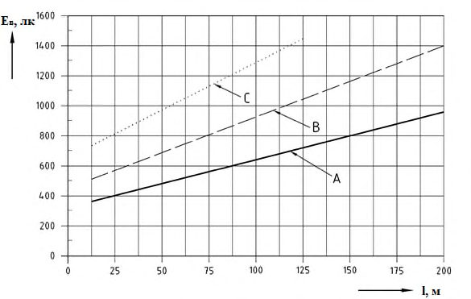

СП 440.1325800.2018 «Спортивные сооружения. Проектирование естественного и искус»
О документе: разработчики, утверждение, регистрация, ключевые слова
СВОД ПРАВИЛ СП 440.1325800.2018
Проектирование естественного и искусственного освещения
Издание официальное
Москва 2018
1 ИСПОЛНИТЕЛИ - Федеральное государственное бюджетное учреждение «Научноисследовательский институт строительной физики Российской академии архитектуры и строительных наук» (НИИСФ РААСН), Общество с ограниченной ответственностью «ЦЕРЕРА-ЭКСПЕРТ» (ООО «ЦЕРЕРА-ЭКСПЕРТ»)
2 ВНЕСЕН Техническим комитетом по стандартизации ТК 465 «Строительство»
3 ПОДГОТОВЛЕН к утверждению Департаментом градостроительной деятельности и архитектуры Министерства строительства и жилищно-коммунального хозяйства Российской Федерации (Минстрой России)
4 УТВЕРЖДЕН приказом Министерства строительства и жилищно-коммунального хозяйства Российской Федерации от 19 декабря 2018 г. № 830/пр и введен в действие с 20 июня 2019 г.
5 ЗАРЕГИСТРИРОВАН Федеральным агентством по техническому регулированию и метрологии (Росстандарт)
6 ВВЕДЕН ВПЕРВЫЕ
В случае пересмотра (замены) или отмены настоящего свода правил соответствующее уведомление будет опубликовано в установленном порядке. Соответствующая информация, уведомление и тексты размещаются также в информационной системе общего пользования - на официальном сайте разработчика (Минстрой России) в сети Интернет
© Минстрой России, 2018
Настоящий нормативный документ не может быть полностью или частично воспроизведен, тиражирован и распространен в качестве официального издания на территории Российской Федерации без разрешения Минстроя России
СП 440.1325800.2018
Дата введения - 2019-06-20
УДК ОКС 91.160.01
Ключевые слова: искусственное освещение, естественное освещение, проектирование, спортивные сооружения, фонари верхнего естественного света
Введение
Настоящий свод правил разработан в соответствии с федеральными законами от 30 декабря 2009 г. № 384-ФЗ «Технический регламент о безопасности зданий и сооружений», от 23 ноября 2009 г. № 261-ФЗ «Об энергосбережении, повышении энергетической эффективности и о внесении изменений в отдельные законодательные акты Российской Федерации», от 22 июля 2008 г. № 123-ФЗ «Технический регламент о требованиях пожарной безопасности», от 23 июля 2013 г. № 192-ФЗ «О внесении изменений в отдельные законодательные акты Российской Федерации в связи с обеспечением общественного порядка и общественной безопасности при проведении официальных спортивных соревнований» и СП 52.13330.2016 «СНиП 23-05-95* Естественное и искусственное освещение».
Свод правил устанавливает правила проектирования естественного и искусственного освещения спортивных сооружений.
Документ разработан авторским коллективом Федерального государственного бюджетного учреждения «Научно-исследовательский институт строительной физики Российской академии архитектуры и строительных наук» (канд. техн. наук И.А. Шмаров, канд. техн. наук В.А. Земцов , Л.В. Бражникова, канд. техн. наук Е.В. Коркина ); ООО «ЦЕРЕРАЭКСПЕРТ» ( Е.А. Литвинская ).
1Область применения
2Нормативные ссылки
- В настоящем своде правил использованы нормативные ссылки на следующие документы:
- ГОСТ Р 57795-2017 Здания и сооружения. Методы расчета продолжительности инсоляции
- СП 50.13330.2012 «СНиП 23-02-2003 Тепловая защита зданий»
- СП 52.13330.2016 «СНиП 23-06-95* Естественное и искусственное освещение»
- СП 59.13330.2016 СНиП 35-01-2001 Доступность зданий и сооружений для маломобильных групп населения
- СП 118.13330.2012 «СНиП 31-06-2009 Общественные здания и сооружения (с изменениями № 1, № 2)
- СП 332.1325800.2017 Спортивные сооружения. Правила проектирования
- СП 370.1325800.2017 Устройства солнцезащитные зданий. Правила проектирования
СанПиН 2.1.2.1188-03 Плавательные бассейны
СПОРТИВНЫЕ СООРУЖЕНИЯ Проектирование естественного и искусственного освещения Sports constructions. Daylighting and artificial lighting design
СанПиН 2.2.1/2.1.1.1278-03 Гигиенические требования к естественному, искусственному и совмещенному освещению жилых и общественных зданий
СанПиН 2.2.1/2.1.1.2585-10 Изменения и дополнения №1 к СанПиН 2.2.1/2.1.1.1278-03 «Гигиенические требования к естественному, искусственному и совмещенному освещению жилых и общественных зданий»
Примечание - При пользовании настоящим сводом правил целесообразно проверить действие ссылочных документов в информационной системе общего пользования - на официальном сайте федерального органа исполнительной власти в сфере стандартизации в сети Интернет или по ежегодному информационному указателю «Национальные стандарты», который опубликован по состоянию на 1 января текущего года, и по выпускам ежемесячного информационного указателя «Национальные стандарты» за текущий год. Если заменен ссылочный документ, на который дана недатированная ссылка, то рекомендуется использовать действующую версию этого документа с учетом всех внесенных в данную версию изменений. Если заменен ссылочный документ, на который дана датированная ссылка, то рекомендуется использовать версию этого документа с указанным выше годом утверждения (принятия). Если после утверждения настоящего свода правил в ссылочный документ, на который дана датированная ссылка, внесено изменение, затрагивающее положение, на которое дана ссылка, то это положение рекомендуется применять без учета данного изменения. Если ссылочный документ отменен без замены, то положение, в котором дана ссылка на него, рекомендуется применять в части, не затрагивающей эту ссылку. Сведения о действии сводов правил целесообразно проверить в Федеральном информационном фонде стандартов.
3Термины и определения
В настоящем своде правил применены термины по СП 52.13330 , а также следующие термины с соответствующими определениями:
- 3.1безопасная зона
- Определенное место, где эвакуирующиеся люди могут собраться и где они не подвергаются опасности, вызванной аварийной ситуацией.
- 3.2дополнительное искусственное освещение
- Искусственное освещение, которое используется в течение рабочего дня в зонах с недостаточным естественным освещением.
- 3.3зенитный фонарь
- Фонарь верхнего естественного света с соотношением наименьшей из сторон (или диаметра) входного основания а фон к высоте светопроводной шахты (светопроводного канала) фонаря (расстояние от входного основания до выходного отверстия) h фон а фон/ h фон > 4.
- 3.4знак безопасности
- Знак, образованный комбинацией цветов и геометрических фигур и передающий через дополнительные графические символы отдельные сообщения о необходимости соблюдения мер безопасности.
- 3.5комбинированное естественное освещение
- Сочетание верхнего и бокового естественного освещения.
- 3.6маломобильные группы населения; МГН
- Люди, испытывающие затруднения при самостоятельном передвижении, получении услуги, необходимой информации или при ориентировании в пространстве. К маломобильным группам населения для целей настоящего свода правил здесь отнесены: инвалиды, люди с ограниченными (временно или постоянно) возможностями здоровья, люди с детскими колясками и т. п.Источник: СП 59.13330.2016, пункт 3.21
- 3.7общая площадь игровой площадки, S общ
- Площадь, включающая в себя основную площадь игровой площадки и, в целях безопасности, некоторую дополнительную площадь за пределами игрового поля.
- 3.8основная площадь игровой площадки, S осн
- Игровое поле, необходимое для определенного вида спорта. Примечания 1 Как правило, основная площадь игровой площадки - размеченная площадка (поле) для данного вида спорта (например, футбола), но в некоторых случаях эта зона включает в себя дополнительную игровую площадь вокруг размеченного поля (например: теннис, волейбол, настольный теннис). 2 Размеры игровых полей должны быть выбраны при проектировании осветительной установки.
- 3.9продолжительность работы аварийного освещения
- Время, в течение которого обеспечивается нормируемая освещенность аварийного освещения.
- 3.10путь эвакуации
- Маршрут, используемый для эвакуации в случае возникновения чрезвычайной ситуации, начинается в точке начала эвакуации и заканчивается в безопасной зоне.
- 3.11расчетная продолжительность работы аварийного источника электрического снабжения
- Продолжительность работы, на которую рассчитан аварийный источник электрического снабжения при нормальных условиях эксплуатации.
- 3.12световоды естественного света
- Светопроводные шахты (светопроводные каналы) естественного света с соотношением наименьшей стороны (диаметра) входного основания а фон, к высоте светопроводной шахты (светопроводного канала) (расстояние от ее входного основания до ее выходного отверстия) 0,1 < h фон : а фон/ h фон < 4.
- 3.13сетка контрольных точек
- Расположение контрольных точек расчета и измерения нормируемых показателей. Примечание - Число контрольных точек определяются размерами основной и общей площади.
- 3.14система указания пути эвакуации
- Система знаков безопасности, позволяющая людям эвакуироваться из места расположения в случае возникновения пожара или чрезвычайной ситуации по установленному пути эвакуации.
- 3.15средняя освещенность; Е ср, лк
- Освещенность рабочей повехности, средневзвешенная по площади заданного участка
- 3.16указатель выхода
- Знак безопасности для обозначения эвакуационного выхода.
- 3.17условная базовая площадь игровой площадки; S баз
- Площадь, определенная для каждого вида спорта, в пределах которой должны быть обеспечены основные требования к освещению, включающая линии разметки и некоторую дополнительную площадь вокруг размеченной площадки. Примечания 1 Размеры площади обычно основаны на размерах основной площади игровой площадки для соответствующего вида спорта и уровня соревнований. 2 Для большинства видов спорта условная базовая площадь ограничена прямоугольником, расположенным в горизонтальной плоскости на уровне земли.
- 3.18уровень спортивного мероприятия
- Соответствие мероприятий определенному порядку (регламенту), утвержденному соответствующей федерацией, союзом, ассоциацией или положением о проведении определенного соревнования.
- Примечание - Уровень соревнований может быть
- международный, всероссийский, межрегиональный, региональный, межмуниципальный, муниципальный.Источник: СП 332.13330.2017, пункт 3.40
- 3.19шахтный фонарь
- Фонарь верхнего естественного света с соотношением наименьшей из сторон (или диаметра) входного основания а фон, к высоте светопроводной шахты (светопроводного канала) фонаря (расстояние от ее входного основания до ее выходного отверстия) h фон, имеющим значение: 0,1 ≤ а фон/ h фон ≤ 4.
4Общие положения
- необходимые условия для видимости спортивной площадки, игровых предметов, ближайшего окружающего игровую зону пространства для спортсменов, судей, обслуживающего персонала зрителям на трибунах и телезрителям;
- достаточную освещенность для телевизионных трансляций спортивных игр, если это предусматривается уровнем спортивного сооружения;
- ограничение слепящего действия светильников искусственного освещения;
- антипаническое эвакуационное освещение для предотвращения паники и несчастных случаев при отключении рабочего искусственного освещения и обеспечения безопасного подхода к путям эвакуации;
- видимость путей эвакуации для обеспечения возможности выхода людей из спортивного сооружения в случае возникновения чрезвычайной ситуации.
5Нормативные требования
В зависимости от значимости спортивных соревнований и игр предусматриваются три класса освещения спортивных сооружений согласно таблице 5.1.
СП .1325800.2018
| Категория спортивного | Уровень соревнования, спортивно- | Класс освещения | Класс освещения | Класс освещения |
|---|---|---|---|---|
| сооружения | массового мероприятия | I | II | III |
| 1 | 2 | 3 | 4 | |
| 5 | ||||
| А | Международные и всероссийские, физкультурные мероприятия и спортивные соревнования | + | ||
| В | Межрегиональные физкультурные мероприятия и спортивные мероприятия, а также физкультурные мероприятия и спортивные мероприятия субъекта Российской Федерации | + | + | |
| С | Местные физкультурные мероприятия и спортивные мероприятия, спортивные занятия маломобильных групп населения | + | + | + |
| С | Тренировки | + | + | |
| С | Отдых (оздоровительные соревнования и спортивное обучение) | + | ||
| О б о з н а ч е н и е «+» - наличие естественного освещения в данной категории спортивного сооружения. | О б о з н а ч е н и е «+» - наличие естественного освещения в данной категории спортивного сооружения. | О б о з н а ч е н и е «+» - наличие естественного освещения в данной категории спортивного сооружения. | О б о з н а ч е н и е «+» - наличие естественного освещения в данной категории спортивного сооружения. | О б о з н а ч е н и е «+» - наличие естественного освещения в данной категории спортивного сооружения. |
Световоды естественного света допускается применять для естественного освещения помещений только в системе комбинированного освещения в качестве верхнего света.
СП .1325800.2018
Применение ламп накаливания и дуговых ртутных ламп (ДРЛ) для освещения спортивных сооружений не допускается.
Требования к рабочему искусственному освещению спортивных сооружений с проведением телевизионных трансляций приведены в разделе 9.
- эвакуации людей при отключении рабочего освещения;
- предотвращения паники при отключении рабочего освещения;
- безопасного прекращения спортивного мероприятия и предотвращения несчастных случаев среди занимающихся спортом при отключении рабочего освещения (в бассейнах, на велотреках, на трамплинах для прыжков на лыжах и т. п).
Основные характеристики аварийного освещения приведены в таблице 5.5.
Таблица 5.2 - Нормативные показатели освещения основных помещений крытых спортивных сооружений по видам спорта
| Номер пози- ции, наиме- нование вида спорта | Класс осве- щения | Плоскость нормирования освещенности и КЕО, высота плоскости над полом, м (Г - горизонтальная, В - вертикальная) | Искусственное освещение | Искусственное освещение | Искусственное освещение | Искусственное освещение | Искусственное освещение | Естественное освещение | Естественное освещение | Совмещенное освещение | Совмещенное освещение | Примечания |
|---|---|---|---|---|---|---|---|---|---|---|---|---|
| Номер пози- ции, наиме- нование вида спорта | Класс осве- щения | Плоскость нормирования освещенности и КЕО, высота плоскости над полом, м (Г - горизонтальная, В - вертикальная) | Сред- няя ос- вещен- ность рабо- чих по- верх- ностей, не ме- нее, лк | Равно- мер- ность распре- деле- ния ос- вещен- ности, не менее | Коэф- фициент слепя- щей блеско- сти R G , не более | Коэф- фици- ент пуль- сации осве- щен- нос- ти, %, не | Индекс цвето- пере- дачи источ- ников света R a, не менее | КЕО e н ,% | КЕО e н ,% | КЕО e н ,% | КЕО e н ,% | Примечания |
| Номер пози- ции, наиме- нование вида спорта | Класс осве- щения | Плоскость нормирования освещенности и КЕО, высота плоскости над полом, м (Г - горизонтальная, В - вертикальная) | Сред- няя ос- вещен- ность рабо- чих по- верх- ностей, не ме- нее, лк | Равно- мер- ность распре- деле- ния ос- вещен- ности, не менее | Коэф- фициент слепя- щей блеско- сти R G , не более | Коэф- фици- ент пуль- сации осве- щен- нос- ти, %, не | Индекс цвето- пере- дачи источ- ников света R a, не менее | при верх- нем или комби- ниро- ванном осве- щении | при боко- вом осве- ще- нии | при верх- нем или комби- ниро- ванном осве- щении | при боко- вом осве- ще- нии | Примечания |
| 1 | 2 | 3 | 4 | 5 | 6 | более 7 | 8 | 9 | 10 | 11 | 12 | 13 |
| 1 Аэробика, гимнастика, ритмическая гимнастика, художественная гимнастика, танцы | 1 Аэробика, гимнастика, ритмическая гимнастика, художественная гимнастика, танцы | 1 Аэробика, гимнастика, ритмическая гимнастика, художественная гимнастика, танцы | 1 Аэробика, гимнастика, ритмическая гимнастика, художественная гимнастика, танцы | 1 Аэробика, гимнастика, ритмическая гимнастика, художественная гимнастика, танцы | 1 Аэробика, гимнастика, ритмическая гимнастика, художественная гимнастика, танцы | 1 Аэробика, гимнастика, ритмическая гимнастика, художественная гимнастика, танцы | 1 Аэробика, гимнастика, ритмическая гимнастика, художественная гимнастика, танцы | 1 Аэробика, гимнастика, ритмическая гимнастика, художественная гимнастика, танцы | 1 Аэробика, гимнастика, ритмическая гимнастика, художественная гимнастика, танцы | 1 Аэробика, гимнастика, ритмическая гимнастика, художественная гимнастика, танцы | 1 Аэробика, гимнастика, ритмическая гимнастика, художественная гимнастика, танцы | 1 Аэробика, гимнастика, ритмическая гимнастика, художественная гимнастика, танцы |
| 1.1 | I | Пол - Г-0,0 | 500 | 0,7 | 30 | 10 | 60 | - | - | - | - | |
| 1.2 | II | Пол - Г-0,0 | 300 | 0,6 | 40 | 10 | 60 | - | - | - | - | |
| 1.3 | III | Пол - Г-0,0 | 200 | 0,5 | 40 | 20 | 60 | - | - | - | - | |
| 2 Бадминтон | 2 Бадминтон | 2 Бадминтон | 2 Бадминтон | 2 Бадминтон | 2 Бадминтон | 2 Бадминтон | 2 Бадминтон | 2 Бадминтон | 2 Бадминтон | 2 Бадминтон | 2 Бадминтон | 2 Бадминтон |
| 2.1 | I | Пол - Г-0,0 | 750 | 0,7 | 30 | 10 | 80 | - | - | - | - | Для бадминтона - светильники не должны быть рас- положены на |
| 2.2 | II | Пол - Г-0,0 | 500 | 0,7 | 40 | 10 | 60 | - | - | - | - | участке потолка прямо над |
| 2.3 | III | Пол - Г-0,0 | 300 | 0,7 | 40 | 20 | 40 | - | - | - | - | основной игровой площадкой |
Продолжение таблицы 5.2
| 1 | 2 | 3 | 4 | 5 | 6 | 7 | 8 | 9 | 10 | 11 | 12 | 13 |
|---|---|---|---|---|---|---|---|---|---|---|---|---|
| 3 Баскетбол | 3 Баскетбол | 3 Баскетбол | 3 Баскетбол | 3 Баскетбол | 3 Баскетбол | 3 Баскетбол | 3 Баскетбол | 3 Баскетбол | 3 Баскетбол | 3 Баскетбол | 3 Баскетбол | 3 Баскетбол |
| 3.1 | I | Пол - Г-0,0 | 750 | 0,7 | 30 | 10 | 60 | - | - | - | - | Для баскетбола - светильники не должны устанавли- ваться на потолке в радиусе 4 м над баскетбольной кор- зиной и непосред- ственно над зоной сетки |
| 3.2 | II | Пол - Г-0,0 | 500 | 0,7 | 40 | 10 | 60 | - | - | - | - | Для баскетбола - светильники не должны устанавли- ваться на потолке в радиусе 4 м над баскетбольной кор- зиной и непосред- ственно над зоной сетки |
| 3.3 | III | Пол - Г-0,0 | 300 | 0,5 | 40 | 20 | 40 | - | - | - | - | Для баскетбола - светильники не должны устанавли- ваться на потолке в радиусе 4 м над баскетбольной кор- зиной и непосред- ственно над зоной сетки |
| 4 Бильярд, снукер | 4 Бильярд, снукер | 4 Бильярд, снукер | 4 Бильярд, снукер | 4 Бильярд, снукер | 4 Бильярд, снукер | 4 Бильярд, снукер | 4 Бильярд, снукер | 4 Бильярд, снукер | 4 Бильярд, снукер | 4 Бильярд, снукер | 4 Бильярд, снукер | 4 Бильярд, снукер |
| 4.1 | I | Пол - Г-0,0 | 750 | 0,8 | 30 | 10 | 80 | - | - | - | - | Е ср. ( ТА ) / Е ср. ( РА ) ≥ ≥0,5 |
| 4.2 | II | Пол - Г-0,0 | 500 | 0,8 | 40 | 10 | 80 | - | - | - | - | Е ср. ( ТА ) / Е ср. ( РА ) ≥ ≥0,5 |
| 4.3 | III | Пол - Г-0,0 | 500 | 0,8 | 40 | 20 | 80 | - | - | - | - | Е ср. ( ТА ) / Е ср. ( РА ) ≥ ≥0,5 |
| 5 Боевые искусства, дзюдо, карате, тяжелая атлетика, реслинг | 5 Боевые искусства, дзюдо, карате, тяжелая атлетика, реслинг | 5 Боевые искусства, дзюдо, карате, тяжелая атлетика, реслинг | 5 Боевые искусства, дзюдо, карате, тяжелая атлетика, реслинг | 5 Боевые искусства, дзюдо, карате, тяжелая атлетика, реслинг | 5 Боевые искусства, дзюдо, карате, тяжелая атлетика, реслинг | 5 Боевые искусства, дзюдо, карате, тяжелая атлетика, реслинг | 5 Боевые искусства, дзюдо, карате, тяжелая атлетика, реслинг | 5 Боевые искусства, дзюдо, карате, тяжелая атлетика, реслинг | 5 Боевые искусства, дзюдо, карате, тяжелая атлетика, реслинг | 5 Боевые искусства, дзюдо, карате, тяжелая атлетика, реслинг | 5 Боевые искусства, дзюдо, карате, тяжелая атлетика, реслинг | 5 Боевые искусства, дзюдо, карате, тяжелая атлетика, реслинг |
| 5.1 | I | Пол - Г-0,0 | 750 | 0,7 | 30 | 10 | 60 | - | - | - | - | |
| 5.2 | II | Пол - Г-0,0 | 500 | 0,7 | 40 | 10 | 60 | - | - | - | - | |
| 5.3 | III | Пол - Г-0,0 | 200 | 0,5 | 40 | 20 | 40 | - | - | - | - | |
| 6 Бокс | 6 Бокс | 6 Бокс | 6 Бокс | 6 Бокс | 6 Бокс | 6 Бокс | 6 Бокс | 6 Бокс | 6 Бокс | 6 Бокс | 6 Бокс | 6 Бокс |
| 6.1 | I | Ринг - Г-0,0 | 2000 | 0,8 | 10 | 80 | - | - | - | - | Е в. ср. / Е г.ср. ≥0,5 | |
| 6.1 | I | Зона тренировки - Г-0,0 | 300 | - | 30 | 10 | 80 | - | - | - | - | Е в. ср. / Е г.ср. ≥0,5 |
| 6.2 | II | Ринг - Г-0,0 | 1000 | 0,8 | 40 | 10 | 80 | - | - | - | - | Е в. ср. / Е г.ср. ≥0,5 |
| 6.2 | II | Зона тренировки - Г-0,0 | 300 | - | 40 | 10 | 80 | - | - | - | - | Е в. ср. / Е г.ср. ≥0,5 |
| 6.3 | III | Ринг - Г-0,0 | 500 | 0,5 | 40 | 10 | 60 | - | - | - | - | |
| 6.3 | III | Зона тренировки - Г-0,0 | 300 | - | 40 | 10 | 60 | - | - | - | - |
Продолжение таблицы 5.2
| 1 | 2 | 3 | 4 | 5 | 6 | 7 | 8 | 9 | 10 | 11 | 12 | 13 |
|---|---|---|---|---|---|---|---|---|---|---|---|---|
| 7 Бочча, буль, петанг, французский боулинг | 7 Бочча, буль, петанг, французский боулинг | 7 Бочча, буль, петанг, французский боулинг | 7 Бочча, буль, петанг, французский боулинг | 7 Бочча, буль, петанг, французский боулинг | 7 Бочча, буль, петанг, французский боулинг | 7 Бочча, буль, петанг, французский боулинг | 7 Бочча, буль, петанг, французский боулинг | 7 Бочча, буль, петанг, французский боулинг | 7 Бочча, буль, петанг, французский боулинг | 7 Бочча, буль, петанг, французский боулинг | 7 Бочча, буль, петанг, французский боулинг | 7 Бочча, буль, петанг, французский боулинг |
| 7.1 | I | Пол - Г-0,0 | 300 | 0,7 | 30 | 10 | 60 | - | - | - | - | |
| 7.2 | II | Пол - Г-0,0 | 200 | 0,7 | 40 | 10 | 60 | - | - | - | - | |
| 7.3 | III | Пол - Г-0,0 | 200 | 0,5 | 40 | 20 | 60 | - | - | - | - | |
| 8 Велоспорт (250м и 333,3м) | 8 Велоспорт (250м и 333,3м) | 8 Велоспорт (250м и 333,3м) | 8 Велоспорт (250м и 333,3м) | 8 Велоспорт (250м и 333,3м) | 8 Велоспорт (250м и 333,3м) | 8 Велоспорт (250м и 333,3м) | 8 Велоспорт (250м и 333,3м) | 8 Велоспорт (250м и 333,3м) | 8 Велоспорт (250м и 333,3м) | 8 Велоспорт (250м и 333,3м) | 8 Велоспорт (250м и 333,3м) | 8 Велоспорт (250м и 333,3м) |
| 8.1 | I | Поверхность трека - Г-0,0 | 750 | 0,7 | 30 | 10 | 60 | - | - | - | - | Вертикальная ос- вещенность на фи- нишной линии не- обходима для работы оборудова- ния фотофиниша и судей |
| 8.1 | I | Финишная линия, В-1,0 | 1000 | - | 30 | 10 | 60 | - | - | - | - | Вертикальная ос- вещенность на фи- нишной линии не- обходима для работы оборудова- ния фотофиниша и судей |
| 8.2 | II | Поверхность трека - Г-0,0 | 500 | 0,7 | 40 | 10 | 60 | - | - | - | - | Вертикальная ос- вещенность на фи- нишной линии не- обходима для работы оборудова- ния фотофиниша и судей |
| 8.2 | II | Финишная линия, В-1,0 | 1000 | - | 40 | 10 | 60 | - | - | - | - | Вертикальная ос- вещенность на фи- нишной линии не- обходима для работы оборудова- ния фотофиниша и судей |
| 8.3 | III | Поверхность трека - Г-0,0 | 200 | 0,7 | 40 | 10 | 60 | - | - | - | - | Вертикальная ос- вещенность на фи- нишной линии не- обходима для работы оборудова- ния фотофиниша и судей |
| 8.3 | III | Финишная линия, В-1,0 | 1000 | - | 40 | 10 | 60 | - | - | - | - | Вертикальная ос- вещенность на фи- нишной линии не- обходима для работы оборудова- ния фотофиниша и судей |
| 9 Волейбол | 9 Волейбол | 9 Волейбол | 9 Волейбол | 9 Волейбол | 9 Волейбол | 9 Волейбол | 9 Волейбол | 9 Волейбол | 9 Волейбол | 9 Волейбол | 9 Волейбол | 9 Волейбол |
| 9.1 | I | Пол - Г-0,0 | 750 | 0,7 | 30 | 10 | 60 | - | - | - | - | Для волейбола - светильники не должны быть рас- положены на по- толке непосред- ственно над ли- нией сетки |
| 9.2 | II | Пол - Г-0,0 | 500 | 0,7 | 40 | 10 | 60 | - | - | - | - | Для волейбола - светильники не должны быть рас- положены на по- толке непосред- ственно над ли- нией сетки |
| 9.3 | III | Пол - Г-0,0 | 200 | 0,5 | 40 | 20 | 40 | - | - | - | - | Для волейбола - светильники не должны быть рас- положены на по- толке непосред- ственно над ли- нией сетки |
| 10 Гандбол, корфбол, нетбол, фистбол | 10 Гандбол, корфбол, нетбол, фистбол | 10 Гандбол, корфбол, нетбол, фистбол | 10 Гандбол, корфбол, нетбол, фистбол | 10 Гандбол, корфбол, нетбол, фистбол | 10 Гандбол, корфбол, нетбол, фистбол | 10 Гандбол, корфбол, нетбол, фистбол | 10 Гандбол, корфбол, нетбол, фистбол | 10 Гандбол, корфбол, нетбол, фистбол | 10 Гандбол, корфбол, нетбол, фистбол | 10 Гандбол, корфбол, нетбол, фистбол | 10 Гандбол, корфбол, нетбол, фистбол | 10 Гандбол, корфбол, нетбол, фистбол |
| 10.1 | I | Пол - Г-0,0 | 750 | 0,7 | 30 | 10 | 60 | - | - | - | - | |
| 10.2 | II | Пол - Г-0,0 | 500 | 0,7 | 40 | 10 | 60 | - | - | - | - | |
| 10.3 | III | Пол - Г-0,0 | 200 | 0,5 | 40 | 20 | 60 | - | - | - | - |
Продолжение таблицы 5.2
| 1 | 2 | 3 | 4 | 5 | 6 | 7 | 8 | 9 | 10 | 11 | 12 | 13 |
|---|---|---|---|---|---|---|---|---|---|---|---|---|
| 11 Дартс | 11 Дартс | 11 Дартс | 11 Дартс | 11 Дартс | 11 Дартс | 11 Дартс | 11 Дартс | 11 Дартс | 11 Дартс | 11 Дартс | 11 Дартс | 11 Дартс |
| 11.1 | I | Линия броска - Г-0,0 | 200 | - | 30 | 10 | 60 | - | - | - | - | |
| 11.1 | I | Мишень, В-1,5 | 750 | - | 30 | 10 | 60 | - | - | - | - | |
| 11.2 | II | Линия броска - Г-0,0 | 200 | - | 40 | 10 | 60 | - | - | - | - | |
| 11.2 | II | Мишень, В-1,5 | 500 | - | 40 | 10 | 60 | - | - | - | - | |
| 11.3 | III | Линия броска - Г-0,0 | 200 | - | 40 | 10 | 60 | - | - | - | - | |
| 11.3 | III | Мишень, В-1,5 | 500 | - | 40 | 10 | 60 | - | - | - | - | |
| 12 Картинг | 12 Картинг | 12 Картинг | 12 Картинг | 12 Картинг | 12 Картинг | 12 Картинг | 12 Картинг | 12 Картинг | 12 Картинг | 12 Картинг | 12 Картинг | 12 Картинг |
| 12.1 | I | Пол - Г-0,0 | 750 | 0,7 | 30 | 10 | 60 | - | - | - | - | |
| 12.2 | II | Пол - Г-0,0 | 500 | 0,7 | 40 | 10 | 60 | - | - | - | - | |
| 12.3 | III | Пол - Г-0,0 | 200 | 0,5 | 40 | 20 | 40 | - | - | - | - | |
| 13 Кендо | 13 Кендо | 13 Кендо | 13 Кендо | 13 Кендо | 13 Кендо | 13 Кендо | 13 Кендо | 13 Кендо | 13 Кендо | 13 Кендо | 13 Кендо | 13 Кендо |
| 13.1 | I | Пол - Г-0,0 | 750 | 0,7 | 30 | 10 | 60 | - | - | - | - | |
| 13.2 | II | Пол - Г-0,0 | 500 | 0,7 | 40 | 10 | 60 | - | - | - | - | |
| 13.3 | III | Пол - Г-0,0 | 200 | 0,5 | 40 | 20 | 40 | - | - | - | - | |
| 14 Керлинг | 14 Керлинг | 14 Керлинг | 14 Керлинг | 14 Керлинг | 14 Керлинг | 14 Керлинг | 14 Керлинг | 14 Керлинг | 14 Керлинг | 14 Керлинг | 14 Керлинг | 14 Керлинг |
| 14.1 | I | Дом для игрового снаряда - Г-0,0 | 300 | 0,7 | 30 | 10 | 60 | - | - | - | - | |
| 14.1 | I | Игровое поле - Г-0,0 | 200 | 0,7 | 30 | 10 | 60 | - | - | - | - | |
| 14.2 | II | Дом для игрового снаряда - Г-0,0 | 300 | 0,7 | 40 | 10 | 60 | - | - | - | - | |
| 14.2 | II | Игровое поле - Г-0,0 | 200 | 0,7 | 40 | 10 | 60 | - | - | - | - | |
| 14.3 | III | Дом для игрового снаряда - Г-0,0 | 300 | 0,7 | 40 | 10 | 60 | - | - | - | - | |
| 14.3 | III | Игровое поле - Г-0,0 | 200 | 0,7 | 40 | 10 | 60 | - | - | - | - |
14 Продолжение таблицы 5.2
| 1 | 2 | 3 | 4 | 5 | 6 | 7 | 8 | 9 | 10 | 11 | 12 | 13 |
|---|---|---|---|---|---|---|---|---|---|---|---|---|
| 15 Конный спорт (скачки, выездка) | 15 Конный спорт (скачки, выездка) | 15 Конный спорт (скачки, выездка) | 15 Конный спорт (скачки, выездка) | 15 Конный спорт (скачки, выездка) | 15 Конный спорт (скачки, выездка) | 15 Конный спорт (скачки, выездка) | 15 Конный спорт (скачки, выездка) | 15 Конный спорт (скачки, выездка) | 15 Конный спорт (скачки, выездка) | 15 Конный спорт (скачки, выездка) | 15 Конный спорт (скачки, выездка) | 15 Конный спорт (скачки, выездка) |
| 15.1 | I | Пол - Г-0,0 | 500 | 0,7 | 30 | 10 | 60 | 4,0 | 1,5 | 2,4 | 0,9 | |
| 15.2 | II | Пол - Г-0,0 | 300 | 0,6 | 40 | 10 | 60 | 3,0 | 1,0 | 1,8 | 0,6 | |
| 15.3 | III | Пол - Г-0,0 | 200 | 0,5 | 40 | 20 | 60 | 2,0 | 0,7 | 1,2 | 0,4 | |
| 16 Конькобежный спорт (короткие дистанции, 400 м), роликовые коньки | 16 Конькобежный спорт (короткие дистанции, 400 м), роликовые коньки | 16 Конькобежный спорт (короткие дистанции, 400 м), роликовые коньки | 16 Конькобежный спорт (короткие дистанции, 400 м), роликовые коньки | 16 Конькобежный спорт (короткие дистанции, 400 м), роликовые коньки | 16 Конькобежный спорт (короткие дистанции, 400 м), роликовые коньки | 16 Конькобежный спорт (короткие дистанции, 400 м), роликовые коньки | 16 Конькобежный спорт (короткие дистанции, 400 м), роликовые коньки | 16 Конькобежный спорт (короткие дистанции, 400 м), роликовые коньки | 16 Конькобежный спорт (короткие дистанции, 400 м), роликовые коньки | 16 Конькобежный спорт (короткие дистанции, 400 м), роликовые коньки | 16 Конькобежный спорт (короткие дистанции, 400 м), роликовые коньки | 16 Конькобежный спорт (короткие дистанции, 400 м), роликовые коньки |
| 16.1 | I | Пол - Г-0,0 | 500 | 0,7 | 30 | 10 | 60 | - | - | - | - | |
| 16.2 | II | Пол - Г-0,0 | 300 | 0,6 | 40 | 10 | 60 | - | - | - | - | |
| 16.3 | III | Пол - Г-0,0 | 200 | 0,5 | 40 | 20 | 60 | - | - | - | - | |
| 17 Крикет, крикетнет | 17 Крикет, крикетнет | 17 Крикет, крикетнет | 17 Крикет, крикетнет | 17 Крикет, крикетнет | 17 Крикет, крикетнет | 17 Крикет, крикетнет | 17 Крикет, крикетнет | 17 Крикет, крикетнет | 17 Крикет, крикетнет | 17 Крикет, крикетнет | 17 Крикет, крикетнет | 17 Крикет, крикетнет |
| 17.4 | I | Пол - Г-0,0 | 750 | 0,7 | 30 | 10 | 60 | - | - | - | - | |
| 17.4 | I | Г-сетка | 1500 | 0,8 | 30 | 10 | 60 | - | - | - | - | |
| 17.5 | II | Пол - Г-0,0 | 500 | 0,7 | 40 | 10 | 60 | - | - | - | - | |
| 17.5 | II | Г-сетка | 1000 | 0,8 | 40 | 10 | 60 | - | - | - | - | |
| 17.6 | III | Пол - Г-0,0 | 300 | 0,7 | 40 | 10 | 40 | - | - | - | - | |
| 17.6 | III | Г-сетка | 750 | 0,8 | 40 | 10 | 40 | - | - | - | - | |
| 18 Легкая атлетика (трек 200м, поле) | 18 Легкая атлетика (трек 200м, поле) | 18 Легкая атлетика (трек 200м, поле) | 18 Легкая атлетика (трек 200м, поле) | 18 Легкая атлетика (трек 200м, поле) | 18 Легкая атлетика (трек 200м, поле) | 18 Легкая атлетика (трек 200м, поле) | 18 Легкая атлетика (трек 200м, поле) | 18 Легкая атлетика (трек 200м, поле) | 18 Легкая атлетика (трек 200м, поле) | 18 Легкая атлетика (трек 200м, поле) | 18 Легкая атлетика (трек 200м, поле) | 18 Легкая атлетика (трек 200м, поле) |
| 18.1 | I | Поверхность, трека, поля - Г-0,0 | 500 | 0,7 | 30 | 10 | 60 | - | - | - | - | Вертикальная осве- щенность на фи- нишной линии необходима для работы оборудования |
| 18.1 | I | Финишная линия, В-1,0 | 1000 | - | 30 | 10 | 60 | - | - | - | - | Вертикальная осве- щенность на фи- нишной линии необходима для работы оборудования |
| 18.2 | II | Поверхность, трека, поля - Г-0,0 | 300 | 0,6 | 40 | 10 | 60 | - | - | - | - | |
| 18.2 | II | Финишная линия, В-1,0 | 1000 | - | 40 | 10 | 60 | - | - | - | - | |
| 18.3 | III | Поверхность, трека, поля - Г-0,0 | 200 | 0,5 | 40 | 10 | 60 | - | - | - | - | фотофиниша и судей |
| 18.3 | III | Финишная линия, В-1,0 | 1000 | - | 40 | 10 | 60 | - | - | - | - | фотофиниша и судей |
Продолжение таблицы 5.2
| 1 | 2 | 3 | 4 | 5 | 6 | 7 | 8 | 9 | 10 | 11 | 12 | 13 |
|---|---|---|---|---|---|---|---|---|---|---|---|---|
| 19 Настольный теннис | 19 Настольный теннис | 19 Настольный теннис | 19 Настольный теннис | 19 Настольный теннис | 19 Настольный теннис | 19 Настольный теннис | 19 Настольный теннис | 19 Настольный теннис | 19 Настольный теннис | 19 Настольный теннис | 19 Настольный теннис | 19 Настольный теннис |
| 19.1 | I | Пол - Г-0,0 | 750 | 0,7 | 30 | 10 | 60 | - | - | - | - | |
| 19.2 | II | Пол - Г-0,0 | 500 | 0,7 | 40 | 10 | 60 | - | - | - | - | |
| 19.3 | III | Пол - Г-0,0 | 300 | 0,7 | 40 | 20 | 40 | - | - | - | - | |
| 20 Перетягивание каната | 20 Перетягивание каната | 20 Перетягивание каната | 20 Перетягивание каната | 20 Перетягивание каната | 20 Перетягивание каната | 20 Перетягивание каната | 20 Перетягивание каната | 20 Перетягивание каната | 20 Перетягивание каната | 20 Перетягивание каната | 20 Перетягивание каната | 20 Перетягивание каната |
| 20.1 | I | Пол - Г-0,0 | 750 | 0,7 | 30 | 10 | 60 | - | - | - | - | |
| 20.2 | II | Пол - Г-0,0 | 500 | 0,7 | 40 | 10 | 60 | - | - | - | - | |
| 20.3 | III | Пол - Г-0,0 | 200 | 0,5 | 40 | 20 | 40 | - | - | - | - | |
| 21 Плавание, водное поло, синхронное плавание | 21 Плавание, водное поло, синхронное плавание | 21 Плавание, водное поло, синхронное плавание | 21 Плавание, водное поло, синхронное плавание | 21 Плавание, водное поло, синхронное плавание | 21 Плавание, водное поло, синхронное плавание | 21 Плавание, водное поло, синхронное плавание | 21 Плавание, водное поло, синхронное плавание | 21 Плавание, водное поло, синхронное плавание | 21 Плавание, водное поло, синхронное плавание | 21 Плавание, водное поло, синхронное плавание | 21 Плавание, водное поло, синхронное плавание | 21 Плавание, водное поло, синхронное плавание |
| 21.1 | I | Поверхность воды - Г- 0,0 | 500 | 0,7 | 30 | 10 | 60 | 4,0 | 1,5 | 2,4 | 0,9 0,6 | Для плавания и водного поло не должно использо- ваться подводное освещение |
| 21.2 | II | Поверхность воды - Г- 0,0 | 300 | 0,7 | 40 | 10 | 60 | 3,0 | 1,0 | 1,8 | Для плавания и водного поло не должно использо- ваться подводное освещение | |
| 21.3 | III | Поверхность воды - Г- 0,0 | 200 | 0,5 | 40 | 20 | 60 | 2,0 | 0,7 | 1,2 | 0,4 | Для плавания и водного поло не должно использо- ваться подводное освещение |
| 22 Прыжки в воду | 22 Прыжки в воду | 22 Прыжки в воду | 22 Прыжки в воду | 22 Прыжки в воду | 22 Прыжки в воду | 22 Прыжки в воду | 22 Прыжки в воду | 22 Прыжки в воду | 22 Прыжки в воду | 22 Прыжки в воду | 22 Прыжки в воду | 22 Прыжки в воду |
| 22.1 | I | Поверхность воды - Г- 0,0 | 500 | 0,7 | 30 | 10 | 60 | 4,0 | 1,5 | 2,4 | 0,9 | Е г. ср. / Е в.ср. ≥0,8 |
| 22.2 | II | Поверхность воды - Г- 0,0 | 300 | 0,7 | 40 | 10 | 60 | 3,0 | 1,0 | 1,8 | 0,6 | Е г. ср. / Е в.ср. ≥0,5 |
| 22.3 | III | Поверхность воды - Г- 0,0 | 200 | 0,5 | 40 | 20 | 60 | 2,0 | 0,7 | 1,2 | 0,4 | Е г. ср. / Е в.ср. ≥0,5 |
| 23 Ракетбол, сквош | 23 Ракетбол, сквош | 23 Ракетбол, сквош | 23 Ракетбол, сквош | 23 Ракетбол, сквош | 23 Ракетбол, сквош | 23 Ракетбол, сквош | 23 Ракетбол, сквош | 23 Ракетбол, сквош | 23 Ракетбол, сквош | 23 Ракетбол, сквош | 23 Ракетбол, сквош | 23 Ракетбол, сквош |
| 23.1 | I | Пол - Г-0,0 | 750 | 0,7 | 30 | 10 | 60 | - | - | - | - | Световые приборы не должны разме- щаться на расстоя- нии 1 м от боковой стены |
| 23.2 | II | Пол - Г-0,0 | 500 | 0,7 | 30 | 10 | 60 | - | - | - | - | Световые приборы не должны разме- щаться на расстоя- нии 1 м от боковой стены |
| 23.3 | III | Пол - Г-0,0 | 300 | 0,7 | 40 | 20 | 40 | - | - | - | - | Световые приборы не должны разме- щаться на расстоя- нии 1 м от боковой стены |
Продолжение таблицы 5.2
| 1 | 2 | 3 | 4 | 5 | 6 | 7 | 8 | 9 | 10 | 11 | 12 | 13 |
|---|---|---|---|---|---|---|---|---|---|---|---|---|
| 24 Скалолазание (подъем на стену) | 24 Скалолазание (подъем на стену) | 24 Скалолазание (подъем на стену) | 24 Скалолазание (подъем на стену) | 24 Скалолазание (подъем на стену) | 24 Скалолазание (подъем на стену) | 24 Скалолазание (подъем на стену) | 24 Скалолазание (подъем на стену) | 24 Скалолазание (подъем на стену) | 24 Скалолазание (подъем на стену) | 24 Скалолазание (подъем на стену) | 24 Скалолазание (подъем на стену) | 24 Скалолазание (подъем на стену) |
| 24.1 | I | В-1,5 | 500 | 0,7 | 30 | 10 | 60 | - | - | - | - | |
| 24.2 | II | В-1,5 | 300 | 0,6 | 40 | 10 | 60 | - | - | - | - | |
| 24.3 | III | В-1,5 | 200 | 0,5 | 40 | 20 | 40 | - | - | - | - | |
| 25 Стрельба из лука (линия стрельбы, мишень), стрельба (линия стрельбы, мишень), боулинг | 25 Стрельба из лука (линия стрельбы, мишень), стрельба (линия стрельбы, мишень), боулинг | 25 Стрельба из лука (линия стрельбы, мишень), стрельба (линия стрельбы, мишень), боулинг | 25 Стрельба из лука (линия стрельбы, мишень), стрельба (линия стрельбы, мишень), боулинг | 25 Стрельба из лука (линия стрельбы, мишень), стрельба (линия стрельбы, мишень), боулинг | 25 Стрельба из лука (линия стрельбы, мишень), стрельба (линия стрельбы, мишень), боулинг | 25 Стрельба из лука (линия стрельбы, мишень), стрельба (линия стрельбы, мишень), боулинг | 25 Стрельба из лука (линия стрельбы, мишень), стрельба (линия стрельбы, мишень), боулинг | 25 Стрельба из лука (линия стрельбы, мишень), стрельба (линия стрельбы, мишень), боулинг | 25 Стрельба из лука (линия стрельбы, мишень), стрельба (линия стрельбы, мишень), боулинг | 25 Стрельба из лука (линия стрельбы, мишень), стрельба (линия стрельбы, мишень), боулинг | 25 Стрельба из лука (линия стрельбы, мишень), стрельба (линия стрельбы, мишень), боулинг | 25 Стрельба из лука (линия стрельбы, мишень), стрельба (линия стрельбы, мишень), боулинг |
| 25.1 | I | Линия стрельбы, зона подхода - Г-0,0 | 200 | 0,5 | 30 | 10 | 60 | - | - | - | - | Е в. мин. / Е в.ср. |
| 25.1 | I | Кегли, В-1,0 Мишень (25м), В-1,0 Мишень (50м), В-1,0 | 500 1000 2000 | 0,8* | 30 | 10 | 60 | - | - | - | - | Е в. мин. / Е в.ср. |
| 25.2 | II | Линия стрельбы, зона подхода - Г-0,0 | 200 | 0,5 | 40 | 10 | 60 | - | - | - | - | Е в. мин. / Е в.ср. |
| 25.2 | II | Кегли, В-1,0 Мишень (25м), В-1,0 Мишень (50м), В-1,0 | 500 1000 2000 | 0,8* | 40 | 10 | 60 | - | - | - | - | Е в. мин. / Е в.ср. |
| 25.3 | III | Линия стрельбы, зона подхода - Г-0,0 | 200 | 0,5 | 40 | 10 | 60 | - | - | - | - | Е в. мин. / Е в.ср. |
| 25.3 | III | Кегли, В-1,0 Мишень (25м), В-1,0 Мишень (50м), В-1,0 | 500 1000 2000 | 0,8* | 40 | 10 | 60 | - | - | - | - | Е в. мин. / Е в.ср. |
| 26 Соревнования по игре в шары | 26 Соревнования по игре в шары | 26 Соревнования по игре в шары | 26 Соревнования по игре в шары | 26 Соревнования по игре в шары | 26 Соревнования по игре в шары | 26 Соревнования по игре в шары | 26 Соревнования по игре в шары | 26 Соревнования по игре в шары | 26 Соревнования по игре в шары | 26 Соревнования по игре в шары | 26 Соревнования по игре в шары | 26 Соревнования по игре в шары |
| 26.1 | I | Пол - Г-0,0 | 500 | 0,8 | 30 | 10 | 60 | - | - | - | - | При строительстве спортивных сору- жений значения для класса I могут быть приняты для |
| 26.2 | II | Пол - Г-0,0 | 500 | 0,8 | 40 | 10 | 60 | - | - | - | - | При строительстве спортивных сору- жений значения для класса I могут быть приняты для |
| 26.3 | III | Пол - Г-0,0 | 300 | 0,5 | 40 | 20 | 60 | - | - | - | - | классов |
Продолжение таблицы 5.2
| 1 | 2 | 3 | 4 | 5 | 6 | 7 | 8 | 9 | 10 | 11 | 12 | 13 |
|---|---|---|---|---|---|---|---|---|---|---|---|---|
| 27 Теннис | 27 Теннис | 27 Теннис | 27 Теннис | 27 Теннис | 27 Теннис | 27 Теннис | 27 Теннис | 27 Теннис | 27 Теннис | 27 Теннис | 27 Теннис | 27 Теннис |
| 27.1 | I | Г-0,0 | 750 | 0,7 | 30 | 10 | 60 | - | - | - | - | Светильники не должны быть расположены непосредственно над зоной, ограниченной прямоугольником, размеры которого равны размерам размеченной игровой площадки плюс 3 м за основные линии |
| 27.2 | II | Г-0,0 | 500 | 0,7 | 40 | 10 | 60 | - | - | - | - | Светильники не должны быть расположены непосредственно над зоной, ограниченной прямоугольником, размеры которого равны размерам размеченной игровой площадки плюс 3 м за основные линии |
| 27.3 | III | Г-0,0 | 300 | 0,5 | 40 | 20 | 60 | - | - | - | - | Светильники не должны быть расположены непосредственно над зоной, ограниченной прямоугольником, размеры которого равны размерам размеченной игровой площадки плюс 3 м за основные линии |
| 28 Фехтование | 28 Фехтование | 28 Фехтование | 28 Фехтование | 28 Фехтование | 28 Фехтование | 28 Фехтование | 28 Фехтование | 28 Фехтование | 28 Фехтование | 28 Фехтование | 28 Фехтование | 28 Фехтование |
| 28.1 | I | Пол - Г-0,0 В-1,0 | 750 500 | 0,7 0,7 | 30 | 10 | 60 | - | - | - | - | |
| 28.2 | II | Пол - Г-0,0 В-1,0 | 500 300 | 0,7 0,7 | 40 | 10 | 60 | - | - | - | - | |
| 28.3 | III | Пол - Г-0,0 В-1,0 | 300 200 | 0,7 0,7 | 40 | 10 | 40 | - | - | - | - | |
| 29 Фигурное катание на коньках | 29 Фигурное катание на коньках | 29 Фигурное катание на коньках | 29 Фигурное катание на коньках | 29 Фигурное катание на коньках | 29 Фигурное катание на коньках | 29 Фигурное катание на коньках | 29 Фигурное катание на коньках | 29 Фигурное катание на коньках | 29 Фигурное катание на коньках | 29 Фигурное катание на коньках | 29 Фигурное катание на коньках | 29 Фигурное катание на коньках |
| 29.1 | I | Поверхность льда - Г-0,0 | 750 | 0,7 | 30 | 10 | 60 | - | - | - | - | При высоте установки световых приборов менее 8 м Е мин. / Е ср. >0,5 |
| 29.2 | II | Поверхность льда - Г-0,0 | 500 | 0,7 | 40 | 10 | 60 | - | - | - | - | При высоте установки световых приборов менее 8 м Е мин. / Е ср. >0,5 |
| 29.3 | III | Поверхность льда - Г-0,0 | 200 | 0,7 | 40 | 20 | 40 | - | - | - | - | Для класса III равно- мерность освещенности может быть снижена до 0,5. При высоте установки световых приборов менее 8м Е мин. / Е ср. >0,5 |
Продолжение таблицы 5.2
| 1 | 2 | 3 | 4 | 5 | 6 | 7 | 8 | 9 | 10 | 11 | 12 | 13 |
|---|---|---|---|---|---|---|---|---|---|---|---|---|
| 30 Футбол, минифутбол, флорбол | 30 Футбол, минифутбол, флорбол | 30 Футбол, минифутбол, флорбол | 30 Футбол, минифутбол, флорбол | 30 Футбол, минифутбол, флорбол | 30 Футбол, минифутбол, флорбол | 30 Футбол, минифутбол, флорбол | 30 Футбол, минифутбол, флорбол | 30 Футбол, минифутбол, флорбол | 30 Футбол, минифутбол, флорбол | 30 Футбол, минифутбол, флорбол | 30 Футбол, минифутбол, флорбол | 30 Футбол, минифутбол, флорбол |
| 30.1 | I | Пол - Г-0,0 | 750 | 0,7 | 30 | 10 | 60 | - | - | 4,5 | 1,5 | |
| 30.2 | II | Пол - Г-0,0 | 500 | 0,7 | 40 | 10 | 60 | - | - | 2,4 | 0,9 | |
| 30.3 | III | Пол - Г-0,0 | 200 | 0,5 | 40 | 20 | 40 | - | - | 1,8 | 0,6 | |
| 31 Хоккей на льду | 31 Хоккей на льду | 31 Хоккей на льду | 31 Хоккей на льду | 31 Хоккей на льду | 31 Хоккей на льду | 31 Хоккей на льду | 31 Хоккей на льду | 31 Хоккей на льду | 31 Хоккей на льду | 31 Хоккей на льду | 31 Хоккей на льду | 31 Хоккей на льду |
| 31.1 | I | Поверхность льда - Г-0,0 | 750 | 0,7 | 30 | 10 | 60 | - | - | - | - | При высоте установки световых приборов менее 8 м Е мин. / Е ср. >0,5 |
| 31.2 | II | Поверхность льда - Г-0,0 | 500 | 0,7 | 40 | 10 | 60 | - | - | - | - | При высоте установки световых приборов менее 8 м Е мин. / Е ср. >0,5 |
| 31.3 | III | Поверхность льда - Г-0,0 | 200 | 0,7 | 40 | 20 | 40 | - | - | - | - | Для класса III равно- мерность освещенности может быть снижена до 0,5. При высоте установки световых приборов менее 8м Е мин. / Е ср. >0,5 |
| 32 Хоккей на траве | 32 Хоккей на траве | 32 Хоккей на траве | 32 Хоккей на траве | 32 Хоккей на траве | 32 Хоккей на траве | 32 Хоккей на траве | 32 Хоккей на траве | 32 Хоккей на траве | 32 Хоккей на траве | 32 Хоккей на траве | 32 Хоккей на траве | 32 Хоккей на траве |
| 32.1 | I | Поверхность травы - Г-0,0 | 750 | 0,7 | 30 | 10 | 60 | - | - | 4,5 | 1,5 | При высоте установки световых приборов менее 8 м Е мин. / Е ср. >0,5 |
| 32.2 | II | Поверхность травы - Г-0,0 | 500 | 0,7 | 40 | 10 | 60 | - | - | 2,4 | 0,9 | При высоте установки световых приборов менее 8 м Е мин. / Е ср. >0,5 |
| 32.3 | III | Поверхность травы - Г-0,0 | 200 | 0,7 | 40 | 20 | 40 | - | - | 1,8 | 0,6 | Для класса III равномерность ос- вещенности может быть снижена до 0,5. При высоте установки световых приборов менее 8м Е мин. / Е ср. >0,5 |
Таблица 5.3 - Нормативные показатели освещения основных помещений физкультурно-оздоровительных комплексов
| Плоскость нормирования освещенности и КЕО, высота плоскости над полом, м (Г - горизонталь- | Искусственное освещение | Искусственное освещение | Искусственное освещение | Искусственное освещение | Искусственное освещение | Естественное освещение | Естественное освещение | Совмещенное освещение | Совмещенное освещение | Примечания | |
|---|---|---|---|---|---|---|---|---|---|---|---|
| Номер позиции, наименование | Плоскость нормирования освещенности и КЕО, высота плоскости над полом, м (Г - горизонталь- | Сред- няя ос- вещен- ность рабо- чих по- верх- ностей, не ме- | Равно- мер- ность распре- деле- ния ос- вещен- ности, не менее | Объе- динен- ный пока- затель диско- мфорта UGR , не более | Коэф- фици- ент пуль- сации осве- щен- нос- ти, %, не | цвето- пере- дачи источ- ников света R a, не | КЕО e н ,% | КЕО e н ,% | КЕО e н ,% | КЕО e н ,% | Примечания |
| помещения | ная, В - вертикальная) | нее, лк | более | Индекс менее | при верх- нем или комби- ниро- ванном осве- щении | при боко- вом осве- ще- нии | при верх- нем или комби- ниро- ванном осве- щении | при боко- вом осве- ще- нии | |||
| 1 | 2 | 3 | 4 | 5 | 6 | 7 | 8 | 9 | 10 | 11 | 12 |
| 1 Залы | Г-0,0 - на полу | 300 | 0,7 | 24 | 20 | 80 | 3,0 | 1,0 | 1,8 | 0,6 | |
| спортивных игр, многофункцио- нальные спортивные залы | В-2,0 - с обеих сторон на продольной оси помещения | 150 | - | - | - | - | - | - | - | - | |
| 2 Залы бассейнов | Г - поверхность воды | 300 | 0,7 | 24 | 20 | 80 | 2,0 | 0,5 | 1,2 | 0,3 | |
| 3 Залы аэробики, гимнастики, борьбы | Г-0,0 - на полу | 300 | 0,7 | 24 | 20 | 80 | 2,5 | 0,7 | 1,5 | 0,4 | |
| 4 Ледовые арены | Поверхность льда - Г-0,0 | 200 | 0,5 | 20 | 20 | 40 | - | - | - | - |
Продолжение таблицы 5.3
| 1 | 2 | 3 | 4 | 5 | 6 | 7 | 8 | 9 | 10 | 11 | 12 |
|---|---|---|---|---|---|---|---|---|---|---|---|
| 5 Кегельбаны | Г-0,0 - на полу | 200 | 0,7 | 24 | 20 | - | - | - | - | - | |
| 6 Бильярдная | Г - 0,8 | 300 | 0,7 | 21 | 20 | 80 | - | - | - | - | |
| 7 Серверная | Г - 0,8 | 400 | 0,7 | 21 | 10 | 80 | - | - | - | - | |
| 8 Снарядные, инвентарные, хозяйственные кладовые | Г - 0,8 | 50 | - | - | - | - | - | - | - | - | |
| 9 Кабинеты администрации и персонала | Г - 0,8 | 300 | 0,7 | 21 | 15 | 80 | 3,0 | 1,0 | 1,8 | 0,6 | |
| 10 Фойе, гардероб, кассы | Г-0,0 - на полу | 200 | - | - | - | - | - | - | - | - |
Таблица 5.4- Нормативные требования к освещению открытых спортивных сооружений
| Номер по- зиции, наиме- нование вида спорта | Класс осве- ще- ния | Плоскость (Г - горизонтальная, В - вертикальная, Н - наклонная), на которой нормируется освещенность, высота плоскости над землей или полом, м | Средняя освещен- ность, лк | Равномер- ность распреде- ления освещен- ности | Коэф- фициент слепя- щей блескос- ти, R GL - | Индекс цвето- передачи источ- ников света, R a ,, не менее | Примечание |
|---|---|---|---|---|---|---|---|
| 1 | 2 | 3 | 4 | 5 | 6 | 7 | 8 |
| 1 Баскетбол, волейбол, гандбол, нетбол, пляжный волейбол | 1 Баскетбол, волейбол, гандбол, нетбол, пляжный волейбол | 1 Баскетбол, волейбол, гандбол, нетбол, пляжный волейбол | 1 Баскетбол, волейбол, гандбол, нетбол, пляжный волейбол | 1 Баскетбол, волейбол, гандбол, нетбол, пляжный волейбол | 1 Баскетбол, волейбол, гандбол, нетбол, пляжный волейбол | 1 Баскетбол, волейбол, гандбол, нетбол, пляжный волейбол | 1 Баскетбол, волейбол, гандбол, нетбол, пляжный волейбол |
| 1.1 | I | Поверхность площадки. Г-0,0 | 500 | 0,7 | 50 | 80 | |
| 1.2 | II | Поверхность площадки. Г-0,0 | 200 | 0,6 | 50 | 60 | |
| 1.3 | III | Поверхность площадки. Г-0,0 | 75 | 0,5 | 55 | 40 | |
| 2 Бег, кросс (уличный/по пересеченной местности) | 2 Бег, кросс (уличный/по пересеченной местности) | 2 Бег, кросс (уличный/по пересеченной местности) | 2 Бег, кросс (уличный/по пересеченной местности) | 2 Бег, кросс (уличный/по пересеченной местности) | 2 Бег, кросс (уличный/по пересеченной местности) | 2 Бег, кросс (уличный/по пересеченной местности) | 2 Бег, кросс (уличный/по пересеченной местности) |
| 2.1 | I | Поверхность площадки. Г-0,0 | 20 | 0,3 | 55 | 40 | |
| 2.2 | II | Поверхность площадки. Г-0,0 | 10 | 0,3 | 55 | 40 | |
| 2.3 | III | Поверхность площадки. Г-0,0 | 3 | 0,3 | 55 | 40 | |
| 3 Бейсбол, крикет | 3 Бейсбол, крикет | 3 Бейсбол, крикет | 3 Бейсбол, крикет | 3 Бейсбол, крикет | 3 Бейсбол, крикет | 3 Бейсбол, крикет | 3 Бейсбол, крикет |
| 3.1 | I | Поверхность площадки. Г-0,0 | 750 | 0,7 | 50 | 80 | |
| 3.2 | II | Поверхность площадки. Г-0,0 | 500 | 0,7 | 50 | 60 | |
| 3.3 | III | Поверхность площадки. Г-0,0 | 300 | 0,5 | 55 | 40 | |
| 4 Бочча, буль, петанг и французский боулинг | 4 Бочча, буль, петанг и французский боулинг | 4 Бочча, буль, петанг и французский боулинг | 4 Бочча, буль, петанг и французский боулинг | 4 Бочча, буль, петанг и французский боулинг | 4 Бочча, буль, петанг и французский боулинг | 4 Бочча, буль, петанг и французский боулинг | 4 Бочча, буль, петанг и французский боулинг |
| 4.1 | I | Поверхность площадки. Г-0,0 | 500 | 0,7 | 50 | 80 | |
| 4.2 | II | Поверхность площадки. Г-0,0 | 200 | 0,7 | 50 | 60 | |
| 4.3 | III | Поверхность площадки. Г-0,0 | 75 | 0,5 | 55 | 40 | |
| 5 Велогонки, картинг | 5 Велогонки, картинг | 5 Велогонки, картинг | 5 Велогонки, картинг | 5 Велогонки, картинг | 5 Велогонки, картинг | 5 Велогонки, картинг | 5 Велогонки, картинг |
| 5.1 | I | Поверхность трека. Г-0,0 Финишная линия. В-1,0 | 500 1000 | 0,7 | 50 | 80 | Вертикальная освещенность на финишной линии необхо- дима для работы оборудо- вания фотофиниша и судей |
| 5.2 | II | Поверхность трека. Г-0,0 Финишная линия. В-1,0 | 300 1000 | 0,7 | 50 | 60 | Вертикальная освещенность на финишной линии необхо- дима для работы оборудо- вания фотофиниша и судей |
Продолжение таблицы 5.4
| 1 | 2 | 3 | 4 | 5 | 6 | 7 | 8 |
|---|---|---|---|---|---|---|---|
| 5.3 | III | Поверхность трека. Г-0,0 | 100 | 0,5 | 55 | 40 | |
| 5.3 | III | Финишная линия. В-1,0 | 1000 | 0,5 | 55 | 40 | |
| 6 Гольф | 6 Гольф | 6 Гольф | 6 Гольф | 6 Гольф | 6 Гольф | 6 Гольф | 6 Гольф |
| 6.1 | I | Зона подачи. Г-0,0 | - | - | - | - | |
| 6.1 | I | На расстоянии метки. В-1,0 | - | - | - | - | |
| 6.2 | II | Зона подачи. Г-0,0 | - | - | - | - | |
| 6.2 | II | На расстоянии метки. В-1,0 | - | - | - | - | |
| 6.3 | III | Зона подачи. Г-0,0 | 100 | 0,8 | 55 | 40 | |
| 6.3 | III | На расстоянии метки. В-1,0 | 50 | 0,8 | 55 | 40 | |
| 7 Конный спорт, скачки | 7 Конный спорт, скачки | 7 Конный спорт, скачки | 7 Конный спорт, скачки | 7 Конный спорт, скачки | 7 Конный спорт, скачки | 7 Конный спорт, скачки | 7 Конный спорт, скачки |
| 7.1 | I | Поверхность поля. Г-0,0 | 200 | 0,6 | 50 | 80 | Вертикальная освещенность на финишной линии должна составлять 1000 лк, чтобы обеспечить условия для работы оборудования фотофиниша и судей. Когда лошади находятся под наблюдением (например, ветеринаров), освещенность должна быть 100 лк |
| 7.1 | I | Финишная линия. В-1,0 | 750 | 0,6/0,4 (продольная/ поперечная) | 50 | 80 | Вертикальная освещенность на финишной линии должна составлять 1000 лк, чтобы обеспечить условия для работы оборудования фотофиниша и судей. Когда лошади находятся под наблюдением (например, ветеринаров), освещенность должна быть 100 лк |
| 7.1 | I | Противоположная линия и поворот. В-1,0 | 500 | 0,6/0,4 (продольная/ поперечная) | 50 | 80 | Вертикальная освещенность на финишной линии должна составлять 1000 лк, чтобы обеспечить условия для работы оборудования фотофиниша и судей. Когда лошади находятся под наблюдением (например, ветеринаров), освещенность должна быть 100 лк |
| 7.2 | II | Поверхность поля. Г-0,0 | 100 | 0,4 | 50 | 60 | Вертикальная освещенность на финишной линии должна составлять 1000 лк, чтобы обеспечить условия для работы оборудования фотофиниша и судей. Когда лошади находятся под наблюдением (например, ветеринаров), освещенность должна быть 100 лк |
| 7.2 | II | Финишная линия. В-1,0 | 300 | 0,6/0,4 (продольная/ поперечная) | 50 | 60 | Вертикальная освещенность на финишной линии должна составлять 1000 лк, чтобы обеспечить условия для работы оборудования фотофиниша и судей. Когда лошади находятся под наблюдением (например, ветеринаров), освещенность должна быть 100 лк |
| 7.2 | II | Противоположная линия и поворот. В-1,0 | 200 | 0,6/0,4 (продольная/ поперечная) | 50 | 60 | Вертикальная освещенность на финишной линии должна составлять 1000 лк, чтобы обеспечить условия для работы оборудования фотофиниша и судей. Когда лошади находятся под наблюдением (например, ветеринаров), освещенность должна быть 100 лк |
Продолжение таблицы 5.4
| 1 | 2 | 3 | 4 | 5 | 6 | 7 | 8 |
|---|---|---|---|---|---|---|---|
| 7.3 | III | Поверхность поля. Г-0,0 | 50 | 0,2 | 55 | 40 | |
| 7.3 | III | Финишная линия. В-1,0 | 100 | 0,3 | 55 | 40 | |
| 7.3 | III | Противоположная линия поворот. В-1,0 | - | - | 55 | 40 | |
| 7.3 | III | Мишень. В-1,5 | 750 | 0,8 | 55 | 40 | |
| 8 Легкая атлетика (все виды), конный спорт, конькобежный спорт | 8 Легкая атлетика (все виды), конный спорт, конькобежный спорт | 8 Легкая атлетика (все виды), конный спорт, конькобежный спорт | 8 Легкая атлетика (все виды), конный спорт, конькобежный спорт | 8 Легкая атлетика (все виды), конный спорт, конькобежный спорт | 8 Легкая атлетика (все виды), конный спорт, конькобежный спорт | 8 Легкая атлетика (все виды), конный спорт, конькобежный спорт | 8 Легкая атлетика (все виды), конный спорт, конькобежный спорт |
| 8.1 | I | Поверхность трека. Г-0,0 | 500 | 0,7 | 50 | 80 | Вертикальная освещенность на финишной линии необходима для работы оборудования фотофиниша и судей |
| 8.1 | I | Финишная линия. В-1,0 | 1000 | 0,7 | 50 | 80 | Вертикальная освещенность на финишной линии необходима для работы оборудования фотофиниша и судей |
| 8.2 | II | Поверхность трека. Г-0,0 | 300 | 0,5 | 55 | 60 | Вертикальная освещенность на финишной линии необходима для работы оборудования фотофиниша и судей |
| 8.2 | II | Финишная линия. В-1,0 | 1000 | 0,5 | 55 | 60 | Вертикальная освещенность на финишной линии необходима для работы оборудования фотофиниша и судей |
| 8.3 | III | Поверхность трека. Г-0,0 Финишная линия. В-1,0 | 100 1000 | 0,5 | 55 | 40 | Вертикальная освещенность на финишной линии необходима для работы оборудования фотофиниша и судей |
| 9 Лыжи | 9 Лыжи | 9 Лыжи | 9 Лыжи | 9 Лыжи | 9 Лыжи | 9 Лыжи | 9 Лыжи |
| 9.1 | I | Поверхность площадки. Г-0,0 | 20 | 0,3 | 55 | 40 | |
| 9.2 | II | Поверхность площадки. Г-0,0 | 10 | 0,3 | 55 | 40 | |
| 9.3 | III | Поверхность площадки. Г-0,0 | 3 | 0,3 | 55 | 40 | |
| 10 Лыжи - прыжки с трамплина | 10 Лыжи - прыжки с трамплина | 10 Лыжи - прыжки с трамплина | 10 Лыжи - прыжки с трамплина | 10 Лыжи - прыжки с трамплина | 10 Лыжи - прыжки с трамплина | 10 Лыжи - прыжки с трамплина | 10 Лыжи - прыжки с трамплина |
| 10.1 | I | Зона отрыва. Г-0,0 | 150 | 0,5 | 50 | 40 | В зоне замедления должна быть обеспечена освещен- ность не менее 30% и от освещенности в зоне приземления (без требований по равномерности) |
| 10.1 | I | Зона приземления. Г-0,0 | 300 | 0,7 | 50 | 40 | В зоне замедления должна быть обеспечена освещен- ность не менее 30% и от освещенности в зоне приземления (без требований по равномерности) |
| 10.2 | II | Зона отрыва. Г-0,0 | 50 | 0,3 | 50 | 40 | В зоне замедления должна быть обеспечена освещен- ность не менее 30% и от освещенности в зоне приземления (без требований по равномерности) |
| 10.2 | II | Зона приземления. Г-0,0 | 200 | 0,6 | 50 | 40 | В зоне замедления должна быть обеспечена освещен- ность не менее 30% и от освещенности в зоне приземления (без требований по равномерности) |
| 10.3 | III | Зона отрыва. Г-0,0 | 20 | 0,3 | 55 | 40 | В зоне замедления должна быть обеспечена освещен- ность не менее 30% и от освещенности в зоне приземления (без требований по равномерности) |
| 10.3 | III | Зона приземления. Г-0,0 | 200 | 0,6 | 55 | 40 | В зоне замедления должна быть обеспечена освещен- ность не менее 30% и от освещенности в зоне приземления (без требований по равномерности) |
| 11 Лыжи - скоростной спуск и фристайл | 11 Лыжи - скоростной спуск и фристайл | 11 Лыжи - скоростной спуск и фристайл | 11 Лыжи - скоростной спуск и фристайл | 11 Лыжи - скоростной спуск и фристайл | 11 Лыжи - скоростной спуск и фристайл | 11 Лыжи - скоростной спуск и фристайл | 11 Лыжи - скоростной спуск и фристайл |
| 11.1 | I | Поверхность трассы. Г-0,0 | 100 | 0,5 | 50 | 60 | |
| 11.2 | II | Поверхность трассы. Г-0,0 | 30 | 0,3 | 50 | 40 | |
| 11.3 | III | Поверхность трассы. Г-0,0 | 20 | 0,2 | 55 | 40 |
Продолжение таблицы 5.4
| 1 | 2 | 3 | 4 | 5 | 6 | 7 | 8 |
|---|---|---|---|---|---|---|---|
| 12 Перетягивание каната | 12 Перетягивание каната | 12 Перетягивание каната | 12 Перетягивание каната | 12 Перетягивание каната | 12 Перетягивание каната | 12 Перетягивание каната | 12 Перетягивание каната |
| 12.1 | I | Поверхность площадки. Г-0,0 | 500 | 0,7 | 50 | 80 | |
| 12.2 | II | Поверхность площадки. Г-0,0 | 200 | 0,6 | 50 | 60 | |
| 12.3 | III | Поверхность площадки. Г-0,0 | 75 | 0,5 | 55 | 40 | |
| 13 Плавание, прыжки в воду, синхронное плавание, водное поло | 13 Плавание, прыжки в воду, синхронное плавание, водное поло | 13 Плавание, прыжки в воду, синхронное плавание, водное поло | 13 Плавание, прыжки в воду, синхронное плавание, водное поло | 13 Плавание, прыжки в воду, синхронное плавание, водное поло | 13 Плавание, прыжки в воду, синхронное плавание, водное поло | 13 Плавание, прыжки в воду, синхронное плавание, водное поло | 13 Плавание, прыжки в воду, синхронное плавание, водное поло |
| 13.1 | I | Поверхность воды. Г-0,0 | 500 | 0,7 | 50 | 80 60 | прыжков в воду / Е г.ср. =0,8 |
| 13.2 | II | Поверхность воды. Г-0,0 | 300 | 0,7 | 50 | прыжков в воду / Е г.ср. =0,8 | |
| 13.3 | III | Поверхность воды. Г-0,0 | 200 | 0,5 | 55 | 40 | прыжков в воду / Е г.ср. =0,8 |
| 14 Рэгби, фистбол, флорбол | 14 Рэгби, фистбол, флорбол | 14 Рэгби, фистбол, флорбол | 14 Рэгби, фистбол, флорбол | 14 Рэгби, фистбол, флорбол | 14 Рэгби, фистбол, флорбол | 14 Рэгби, фистбол, флорбол | 14 Рэгби, фистбол, флорбол |
| 14.1 | I | Поверхность площадки. Г-0,0 | 500 | 0,7 | 50 | 80 | |
| 14.2 | II | Поверхность площадки. Г-0,0 | 200 | 0,6 | 50 | 60 | |
| 14.3 | III | Поверхность площадки. Г-0,0 | 75 | 0,5 | 55 | 40 | |
| 15 Санный спорт и бобслей | 15 Санный спорт и бобслей | 15 Санный спорт и бобслей | 15 Санный спорт и бобслей | 15 Санный спорт и бобслей | 15 Санный спорт и бобслей | 15 Санный спорт и бобслей | 15 Санный спорт и бобслей |
| 15.1 | I | Поверхность трассы. Г-0,0 | 300 | 0,7 | 50 | 80 | |
| 15.2 | II | Поверхность трассы. Г-0,0 | 200 | 0,5 | 55 | 60 | |
| 15.3 | III | Поверхность трассы. Г-0,0 | 50 | 0,4 | 55 | 40 | |
| 16 Софтбол | 16 Софтбол | 16 Софтбол | 16 Софтбол | 16 Софтбол | 16 Софтбол | 16 Софтбол | 16 Софтбол |
| 16.1 | I | Внутреннее поле. Г-0,0 | 750 | 0,7 | 50 | 80 | |
| 16.1 | I | Внешнее поле. Г-0,0 | 500 | 0,5 | 50 | 80 | |
| 16.2 | II | Внутреннее поле. Г-0,0 | 500 | 0,7 | 55 | 60 | |
| 16.2 | II | Внешнее поле. Г-0,0 | 300 | 0,5 | 55 | 60 | |
| 16.3 | III | Внутреннее поле. Г-0,0 | 200 | 0,5 | 55 | 40 | |
| 16.3 | III | Внешнее поле. Г-0,0 | 100 | 0,3 | 55 | 40 | |
| 17 Стрельба, стрельба из лука | 17 Стрельба, стрельба из лука | 17 Стрельба, стрельба из лука | 17 Стрельба, стрельба из лука | 17 Стрельба, стрельба из лука | 17 Стрельба, стрельба из лука | 17 Стрельба, стрельба из лука | 17 Стрельба, стрельба из лука |
| 17.1 | I | Линия стрельбы. Г-0,0 | 200 | 0,5 | 55 | 60 | |
| 17.1 | I | Мишень. В-1,5 | 750 | 0,8 | 55 | 60 | |
| 17.2 | II | Линия стрельбы. Г-0,0 | 200 | 0,5 | 55 | 60 | |
| 17.2 | II | Мишень. В-1,5 | 750 | 0,8 | 55 | 60 |
Продолжение таблицы 5.4
| 1 | 2 | 3 | 4 | 5 | 6 | 7 | 8 |
|---|---|---|---|---|---|---|---|
| 17.3 | III | Линия стрельбы. Г-0,0 | 200 | 0,5 | 55 | 60 | |
| 17.3 | III | Мишень. В-1,5 | 750 | 0,8 | 55 | 60 | |
| 18 Теннис | 18 Теннис | 18 Теннис | 18 Теннис | 18 Теннис | 18 Теннис | 18 Теннис | 18 Теннис |
| 18.1 | I | Поверхность площадки. Г-0,0 | 500 | 0,7 | 50 | 80 | |
| 18.2 | II | Поверхность площадки. Г-0,0 | 300 | 0,7 | 50 | 60 | |
| 18.3 | III | Поверхность площадки. Г-0,0 | 200 | 0,6 | 55 | 40 | |
| 19 Футбол | 19 Футбол | 19 Футбол | 19 Футбол | 19 Футбол | 19 Футбол | 19 Футбол | 19 Футбол |
| 19.1 | I | Поверхность площадки. Г-0,0 | 500 | 0,7 | 50 | 80 | |
| 19.2 | II | Поверхность площадки. Г-0,0 | 200 | 0,6 | 50 | 60 | |
| 19.3 | III | Поверхность площадки. Г-0,0 | 75 | 0,5 | 55 | 40 | |
| 20 Футбол американский | 20 Футбол американский | 20 Футбол американский | 20 Футбол американский | 20 Футбол американский | 20 Футбол американский | 20 Футбол американский | 20 Футбол американский |
| 20.1 | I | Поверхность площадки. Г-0,0 | 500 | 0,7 | 50 | 80 | |
| 20.2 | II | Поверхность площадки. Г-0,0 | 200 | 0,6 | 50 | 60 | |
| 20.3 | III | Поверхность площадки. Г-0,0 | 75 | 0,5 | 55 | 40 | |
| 21 Хоккей на траве | 21 Хоккей на траве | 21 Хоккей на траве | 21 Хоккей на траве | 21 Хоккей на траве | 21 Хоккей на траве | 21 Хоккей на траве | 21 Хоккей на траве |
| 21.1 | I | Поверхность поля. Г-0,0 | 500 | 0,7 | 50 | 80 | |
| 21.2 | II | Поверхность поля. Г-0,0 | 200 | 0,7 | 50 | 60 | |
| 21.3 | III | Поверхность поля. Г-0,0 | 200 | 0,7 | 55 | 40 | |
| 22 Хоккей с шайбой, хоккей с мячом | 22 Хоккей с шайбой, хоккей с мячом | 22 Хоккей с шайбой, хоккей с мячом | 22 Хоккей с шайбой, хоккей с мячом | 22 Хоккей с шайбой, хоккей с мячом | 22 Хоккей с шайбой, хоккей с мячом | 22 Хоккей с шайбой, хоккей с мячом | 22 Хоккей с шайбой, хоккей с мячом |
| 22.1 | I | Поверхность площадки. Г-0,0 | 750 | 0,7 | 50 | 80 | |
| 22.2 | II | Поверхность площадки. Г-0,0 | 500 | 0,7 | 50 | 60 | |
| 22.3 | III | Поверхность площадки. Г-0,0 | 200 | 0,5 | 55 | 40 |
Таблица 5.5 - Аварийное освещение спортивных сооружений
| Номер пози- ции | Назначение помещения, вид спорта | Вид аварийного освещения | Мини- мальная освещен- ность, лк | Макси- мальное время переклю- чения, с | Расчетная длительность работы источника аварийного электро- снабжения, ч | Постоянно включенные эвакуацион- ные указатели и указатели безопасности |
|---|---|---|---|---|---|---|
| 1 | 2 | 3 | 4 | 5 | 6 | 7 |
| Спортивные сооружения | Спортивные сооружения | Спортивные сооружения | Спортивные сооружения | Спортивные сооружения | Спортивные сооружения | Спортивные сооружения |
| 1 | Пути эвакуации: Используемые при эвакуации коридоры и лестницы, наружные лестницы трибун, холлы, помещения между лестницами, пешеходные эстакады, выходы на улицу | Освещение путей эвакуации | 1,0 | 15 | 1,0 | + |
| 2 | Спортивные арены, физкультурно- спортивные залы, крытые трибуны для зрителей, закрытые фойе | Антипаническое освещение | 0,5 | 15 | 1,0 | + |
| 2 | 2 | Освещение путей эвакуации | 1,0 | 15 | 1,0 | + |
| 3 | Физкультурно-спортивные залы, закрытые фойе площадью менее 60 м² | Освещение путей эвакуации | 1,0 | 15 | 1,0 | + |
| 4 | Гимнастика | Освещение зон повышенной опасности | 5% от поз. 1 табл. 5.2 | 15 | 0,05 | |
| 5 | Велогонка | Освещение зон повышенной опасности | 10% от поз. 8 табл. 5.2 | 15 | 0,05 |
Продолжение таблицы 5.5
| 1 | 2 | 3 | 4 | 5 | 6 | 7 |
|---|---|---|---|---|---|---|
| 6 | Конный спорт | Освещение зон повышенной опасности | 5% от поз. 15 табл. 5.2 | 15 | 0,05 | |
| 7 | Конькобежный спорт | Освещение зон повышенной опасности | 5% от поз. 16 табл. 5.2 | 15 | 0,05 | |
| 8 | Бобслей | Освещение зон повышенной опасности | 10% от поз. 15 табл. 5.4 | 15 | 0,05 | |
| 9 | Санный спорт | Освещение зон повышенной опасности | 10% от поз. 15 табл. 5.4 | 15 | 0,05 | |
| 10 | Фигурное катание | Освещение зон повышенной опасности | 5% от поз 29 табл. 5.2 | 15 | 0,05 | |
| 11 | Хоккей на льду | Освещение зон повышенной опасности | 5% от поз. 31 табл. 5.2 | 15 | 0,05 | |
| 12 | Горнолыжный спорт | Освещение зон повышенной опасности | 10% от поз. 11 табл. 5.4 | 15 | 0,05 | |
| 13 | Прыжки с трамплина | Освещение зон повышенной опасности | 10% от поз. 10 табл. 5.4 | 15 | 0,05 | |
| Бассейны для плавания | Бассейны для плавания | Бассейны для плавания | Бассейны для плавания | Бассейны для плавания | Бассейны для плавания | Бассейны для плавания |
| 14 | Крытые трибуны для зрителей | Антипаническое освещение | 0,5 | 15 | 1,0 | + |
| 15 | Водная поверхность ванн и проходы вдоль периметра ванн с площадью зеркала до 100 м² без факторов опасности | Освещение путей эвакуации | 5,0 * | 15 | 1,0 | + |
| 16 | Водная поверхность ванн бассейна и проходы вдоль периметра ванн | Освещение зон повышенной опасности | 20 | 0,5 | 0,05 | + |
| 17 | Плавание | Освещение зон повышенной опасности | 5% от поз. 21 табл. 5.2 | 0,5 | 0,05 | + |
| 18 | Прыжки в воду | Освещение зон повышенной опасности | 5% от поз. 22 табл. 5.2 | 0,5 | 0,05 | + |
Окончание таблицы 5.5
| 1 | 2 | 3 | 4 | 5 | 6 | 7 |
|---|---|---|---|---|---|---|
| Вспомогательные помещения | Вспомогательные помещения | Вспомогательные помещения | Вспомогательные помещения | Вспомогательные помещения | Вспомогательные помещения | Вспомогательные помещения |
| 19 | Места перед каждым эвакуационным выходом и эвакуационным выходом снаружи здания, расположения средств медицинской помощи (медицинской аптечки), располо- жения противопожарного оборудова- ния, размещения плана эвакуации, аварийной сигнализации | Освещение путей эвакуации | 5,0 | 15 | 1,0 | + |
| 20 | Помещения для обеспечения безо- пасности (посты охраны и входного контроля, пожарные посты и пункты неотложной и медицинской помощи) | Освещение путей эвакуации | 5,0 | 15 | 1,0 | + |
| 21 | Диспетчерские, электропомещения, помещения главного распредели- тельного щита и вводно-распредели- тельного устройства с доступом для квалифицированного персонала, в которых размещаются либо источ- ники аварийного электроснабжения, либо электрооборудование, питаемое от системы аварийного электроснаб- жения, помещения для дезинфекции воды и баллонов с газами | Освещение зон повышенной опасности | 15 | 0,5 | 1,0 | - |
| * Норма аварийного освещения, предусмотренная СанПиН 2.1.2.1188-03. Примечание - В настоящей таблице применены следующие обозначения: «+» - обязательность установки световых эвакуационных указателей; «-» - Световые указатели в данном случае необязательны и устанавливаются по необходимости по усмотрению проектной организации, либо владельца здания. | * Норма аварийного освещения, предусмотренная СанПиН 2.1.2.1188-03. Примечание - В настоящей таблице применены следующие обозначения: «+» - обязательность установки световых эвакуационных указателей; «-» - Световые указатели в данном случае необязательны и устанавливаются по необходимости по усмотрению проектной организации, либо владельца здания. | * Норма аварийного освещения, предусмотренная СанПиН 2.1.2.1188-03. Примечание - В настоящей таблице применены следующие обозначения: «+» - обязательность установки световых эвакуационных указателей; «-» - Световые указатели в данном случае необязательны и устанавливаются по необходимости по усмотрению проектной организации, либо владельца здания. | * Норма аварийного освещения, предусмотренная СанПиН 2.1.2.1188-03. Примечание - В настоящей таблице применены следующие обозначения: «+» - обязательность установки световых эвакуационных указателей; «-» - Световые указатели в данном случае необязательны и устанавливаются по необходимости по усмотрению проектной организации, либо владельца здания. | * Норма аварийного освещения, предусмотренная СанПиН 2.1.2.1188-03. Примечание - В настоящей таблице применены следующие обозначения: «+» - обязательность установки световых эвакуационных указателей; «-» - Световые указатели в данном случае необязательны и устанавливаются по необходимости по усмотрению проектной организации, либо владельца здания. | * Норма аварийного освещения, предусмотренная СанПиН 2.1.2.1188-03. Примечание - В настоящей таблице применены следующие обозначения: «+» - обязательность установки световых эвакуационных указателей; «-» - Световые указатели в данном случае необязательны и устанавливаются по необходимости по усмотрению проектной организации, либо владельца здания. | * Норма аварийного освещения, предусмотренная СанПиН 2.1.2.1188-03. Примечание - В настоящей таблице применены следующие обозначения: «+» - обязательность установки световых эвакуационных указателей; «-» - Световые указатели в данном случае необязательны и устанавливаются по необходимости по усмотрению проектной организации, либо владельца здания. |
Таблица 5.6 -Коэффициенты эксплуатации для искусственного и естественного освещения спортивных сооружений
| Спортивные сооружения | Искусственное освещение | Искусственное освещение | Искусственное освещение | Естественное освещение | Естественное освещение | Естественное освещение | Естественное освещение |
|---|---|---|---|---|---|---|---|
| Спортивные сооружения | Коэффициент эксплуатации MF | Коэффициент эксплуатации MF | Коэффициент эксплуатации MF | Коэффициент эксплуатации MF | Коэффициент эксплуатации MF | Коэффициент эксплуатации MF | Коэффициент эксплуатации MF |
| Спортивные сооружения | Число чисток светильников в год | Число чисток светильников в год | Число чисток светильников в год | Число чисток остекления светопроемов в год | Число чисток остекления светопроемов в год | Число чисток остекления светопроемов в год | Число чисток остекления светопроемов в год |
| Спортивные сооружения | Эксплуатационная группа светильников по приложению Д СП 52.13330 | Эксплуатационная группа светильников по приложению Д СП 52.13330 | Эксплуатационная группа светильников по приложению Д СП 52.13330 | Угол наклона светопропускающего материала к горизонту | Угол наклона светопропускающего материала к горизонту | Угол наклона светопропускающего материала к горизонту | Угол наклона светопропускающего материала к горизонту |
| Спортивные сооружения | 1-4 | 5-6 | 7 | 0°- 15° | 16°-45° | 46°-75° | 76°-90° |
| Закрытые спортивные сооружения | 0,71 2 | 0,71 1 | 0,71 1 | 0,67 2 | 0,71 2 | 0,77 1 | 0,83 1 |
| Открытые спортивные сооружения | 0,63 2 | 0,67 2 | 0,67 1 | - | - | - | - |
6Проектирование естественного освещения спортивных сооружений
СП .1325800.2018
Согласно СП 118.13330 без естественного освещения могут проектироваться спортивно-демонстрационные и спортивно-зрелищные залы, спортивные залы с ледовым покрытием, комнаты инструкторского и тренерского состава спортивных сооружений, комнаты обслуживающего персонала, уборные; раздевалки; душевые; помещения бань сухого жара.
Коридоры без естественного освещения следует проектировать с учетом требований пожарной безопасности.
В залах для спортивных игр размещать световые проемы в торцовых стенах не допускается.
В залах со световыми проемами с двух и более сторон основные (расположенные на высоте 2 м от пола) световые проемы должны быть ориентированы в южных районах на север, а в центральных и северных на юго-восток.
При вынужденной ориентации световых проемов на юго-запад или запад необходимо предусматривать применение светорассеивающих материалов для заполнения проемов или наружных солнцезащитных устройств (экранов, козырьков, жалюзи, систем вертикального озеленения), обеспечивающих необходимую солнцезащиту от слепящего и теплового воздействий солнечных лучей в соответствии с СП 370.1325800.
Предохранение от слепящего действия солнечных лучей следует предусматривать и в случаях расположения площадок поперек зала для спортивных игр, при котором оконные проемы оказываются в торцах поля для игры.
При проектировании солнцезащитных устройств продолжительность действия солнцезащиты определяется по солнечным картам ГОСТ Р 57795.
Первый этап выполняется в следующей последовательности:
- определяются требования к естественному освещению помещений;
- осуществляется выбор систем освещения;
- выбираются типы световых проемов и светопропускающих материалов;
- выбираются средства для ограничения слепящего действия прямого солнечного света с учетом ориентации здания и световых проемов по сторонам горизонта.
- предварительный расчет естественного освещения помещений с определением необходимой площади световых проемов;
- уточняются параметры световых проемов и помещений.
На втором этапе проектирования:
- выполняется проверочный расчет естественного освещения помещений;
- определяются помещения, зоны и участки с недостаточным по нормам естественным освещением;
СП .1325800.2018
- определяются требования к дополнительному искусственному освещению помещений, зон и участков с недостаточным естественным освещением;
- определяются требования к эксплуатации световых проемов;
- при необходимости вносятся коррективы в проект естественного освещения и выполняется повторный проверочный расчет.
- назначения и принятого архитектурно-планировочного, объемнопространственного и конструктивного решений здания;
- требований к естественному освещению помещений, вытекающих из особенностей зрительной работы;
- климатических и светоклиматических особенностей места строительства;
- экономичности естественного освещения по энергетическим затратам.
7Проектирование искусственного освещения помещений крытых спортивных сооружений
В пределах условной базовой площади игровой площадки S баз освещенность должна составлять 75% освещенности основной игровой площадки S осн для рассматриваемого вида спорта.
- средняя освещенность;
- равномерность распределения освещенности;
- показатель дискомфорта UGR ;
- коэффициент пульсации освещенности Кп на соответствие нормируемым требованиям.
В расчетах и измерениях применяют сетку контрольных точек, которые размещаются в узлах прямоугольной решетки в пределах основной площади игровой площадки S осн и общей площади игровой площадки S общ на уровне земли (покрытия) для горизонтальной освещенности, а для вертикальной освещенности - на уровне 1 м над землей, если не требуется иное в соответствии с таблицей 5.2.
где d - наибольший размер условной площади, м.
Число точек сетки по длине определяется ближайшим нечетным целым числом к величине отношения d/p .
СП .1325800.2018
Полученная величина шага сетки контрольных точек (расстояние между двумя ее точками) применяется для вычисления числа точек прямоугольной решетки по ширине - как ближайшее нечетное целое число. Этот метод дает соотношение длины и ширины ячейки сетки близкое к 1.
Примеры расположения контрольных точек приведены в приложении А (рисунки А.1 и А.2).
8Проектирование искусственного освещения открытых спортивных сооружений
где d - наибольший размер условной площади, м.
Число точек сетки по длине определяется ближайшим нечетным целым числом к величине отношения d/p .
Полученная величина шага сетки контрольных точек (расстояния между двумя ее точками) применяется для вычисления числа точек прямоугольной решетки по ширине - как ближайшее нечетное целое число. Этот метод дает соотношение длины и ширины ячейки сетки близкое к 1.
9Освещение спортивных соревнований с трансляцией цветного телевидения и киносъемки
Таблица 9.1 - Группы телевизионной съемки для видов спорта
| Вид спорта | Тип сооружения | Номер таблицы, позиция | Группа телевизионной съемки |
|---|---|---|---|
| 1 | 2 | 3 | 4 |
| Аэробика, спортивные танцы | Крытый | 5.2, 1 | B |
| Бадминтон | Крытый | 5.2, 2 | B |
| Баскетбол | Крытый Открытый | 5.2, 3 5.4, 1 | B B |
| Бег, кросс (уличный/по пересеченной местности) | Открытый | 5.4, 2 | - |
| Бейсбол | Открытый | 5.4, 3 | B |
| Бильярд | Крытый | 5.2, 4 | A |
| Боевые искусства, борьба | Крытый | 5.2, 5 | B |
| Бобслей, санный спорт | Открытый | 5.4, 15 | - |
| Бокс | Крытый | 5.2, 6 | C |
| Бочча | Крытый Открытый | 5.2, 7 5.4, 4 | A A |
| Буль | Крытый Открытый | 5.2, 7 5.4, 4 | A A |
| Боулинг (10 кеглей/9 кеглей) | Крытый | 5.2, 25 | A |
| Велоспорт | Крытый Открытый | 5.2, 8 5.4, 5 | B B |
| Волейбол | Крытый Открытый | 5.2, 9 5.4, 1 | B B |
| Выездка (см. конный спорт) | Крытый Открытый | 5.2, 15 5.4, 7 | - |
СП .1325800.2018
Продолжение таблицы 9.1
| 1 | 2 | 3 | 4 |
|---|---|---|---|
| Гандбол | Крытый Открытый | 5.2, 10 5.4, 1 | B B |
| Гимнастика | Крытый | 5.2, 1 | B |
| Гольф (тренировочное поле) | Открытый | 5.4, 6 | - |
| Дартс | Крытый | 5.2, 11 | A |
| Дзюдо | Крытый | 5.2, 5 | B |
| Картинг | Крытый Открытый | 5.2, 12 5.4, 5 | B B |
| Керлинг | Крытый | 5.2, 14 | A |
| Крикет | Крытый Открытый | 5.2, 17 5.4, 3 | C C |
| Конный спорт | Крытый Открытый | 5.2, 15 5.4, 7 | A A |
| Конькобежный спорт (400 м и короткий трек) | Крытый Открытый | 5.2, 16 5.4, 8 | B B |
| Корфбол | Крытый | 5.2, 10 | B |
| Лыжи: кросс по пересеченной местности | Открытый | 5.4, 9 | - |
| Легкая атлетика (все виды) | Крытый Открытый | 5.2, 18 5.4, 8 | A A |
| Лыжи: скоростной спуск/фристайл/прыжки с трамплина | Открытый | 5.4, 9, 10, 11 | - |
| Настольный теннис | Крытый | 5.2, 19 | C |
| Нетбол | Крытый Открытый | 5.2, 10 5.4, 1 | B B |
| Петанг | Крытый Открытый | 5.2, 7 5.4, 4 | - |
| Перетягивание каната | Крытый Открытый | 5.2, 20 5.4, 12 | B B |
| Плавание (все виды) | Крытый Открытый | 5.2, 21 5.4, 13 | A A |
| Пляжный волейбол | Открытый | 5.4, 1 | B |
| Ракетбол | Крытый | 5.2, 23 | C |
| Реслинг | Крытый | 5.2, 5 | B |
Продолжение таблицы 9.1
| 1 | 2 | 3 | 4 |
|---|---|---|---|
| Ритмическая гимнастика | Крытый | 5.2, 1 | B |
| Роликовые коньки | Крытый | 5.2, 16 | B |
| Рэгби | Открытый | 5.4, 14 | B |
| Санный спорт и бобслей | Открытый | 5.4, 15 | - |
| Скалолазание | Крытый | 5.2, 24 | A |
| Скачки | Открытый | 5.4, 7 | B |
| Сквош | Крытый | 5.2, 23 | C |
| Снукер | Крытый | 5.2, 4 | A |
| Софтбол | Открытый | 5.4, 16 | C |
| Стрельба | Крытый Открытый | 5.2, 25 5.4, 17 | A A |
| Стрельба из лука | Крытый Открытый | 5.2, 25 5.4, 17 | A A |
| Теннис | Крытый Открытый | 5.2, 27 5.4, 18 | B B |
| Тяжелая атлетика | Крытый | 5.2, 5 | A |
| Фехтование | Крытый | 5.2, 28 | C |
| Фигурное катание на коньках | Крытый | 5.2, 29 | B |
| Фистбол | Крытый | 5.2, 10 | B |
| Флорбол | Крытый Открытый | 5.2, 30 5.4, 14 | B B |
| Футбол (минифутбол) | Крытый | 5.2, 30 | B |
| Футбол (Ассоциация) | Открытый | 5.4, 19 | B |
| Футбол (Американский) | Открытый | 5.4, 20 | B |
| Хоккей на льду | Крытый Открытый | 5.2, 31 5.4, 22 | C C |
СП .1325800.2018 Окончание таблицы 9.1
| 1 | 2 | 3 | 4 |
|---|---|---|---|
| Хоккей на траве | Крытый Открытый | 5.2, 32 5.4, 21 | B B |
| Хоккей с мячом | Открытый | 5.4, 22 | C |
| Шары (плоская и короткая циновка) | Крытый | 5.2, 26 | A |
В таблицах 5.2. и 5.3 приведены нормируемые значения вертикальной освещенности в расчетных точках на высоте 1 м от поверхности земли (значение по умолчанию).
Если положение основной камеры не определено, например, она располагается в зоне, граничащей с одной из боковых линий (например футбольного поля), освещенность в вертикальных плоскостях, параллельных этой боковой линии, должна соответствовать требованиям по нормируемым значениям и равномерности освещенности.
В редких случаях, когда у главной камеры определено только одно фиксированное положение, для выполнения нормативных требований можно взять вертикальные плоскости, параллельные направлению на главную камеру.
В случае неопределенного положения камеры, освещенность рассчитывается в вертикальных плоскостях, обращенных ко всем четырем сторонам середины поля.
Этот график не подходит для случаев, когда регулярно осуществляется замедленная съемка движений спортсменов. В таких случаях требуются более высокие уровни освещенности.
A, B, C - группы цветной телевизионной съемки по таблице 9.1

Рисунок 9.1 - Нормируемый уровень вертикальной освещенности E в в функции максимального расстояния съемки l
где E в мин - минимальное значение вертикальной освещенности, лк; E в макс - максимальное значение вертикальной освещенности, лк.
СП .1325800.2018
где E г. ср. - среднее значение горизонтальной освещенности, лк; E в. ср - среднее значение вертикальной освещенности, лк.
где E г. мин - минимальное значение горизонтальной освещенности, лк; E г. макс - максимальное значение горизонтальной освещенности, лк.
Следует избегать больших перепадов освещенности на заданном расстоянии. Например, на большом игровом поле (футбольное поле) максимальное изменение горизонтальной освещенности должно быть не более 25 % на 5 м.
В пределах рекомендуемой игровой площади отклонение значений цветовой температуры излучения осветительной установки от среднего значения должно быть в пределах, показанных на рисунке 9.2.
- отклонение, °K; a b
- цветовая температура, °K
Рисунок 9.2 - Допустимая погрешность цветовой температуры в пределах условной игровой площади
10Технико-экономическая оценка освещения спортивных сооружений
- определяют нормированные значения КЕО для помещения при естественном и совмещенном освещении;
- определяют нормы искусственной освещенности в соответствии с разрядом и подразрядом зрительных работ в соответствии с СП 52.13330;
- определяют расчетное значение КЕО е р ;
- расчетное значение КЕО е p сравнивают с нормируемым значением, при этом могут быть три случая:
1) е p более нормированного -возможно уменьшение размеров светопроемов и дальнейший технико-экономический расчет может проводиться для сравнения вариантов систем естественного освещения с различными размерами светопроемов;
2) е p более 0,8 нормированного - возможно увеличение размеров светопроемов, и дальнейший технико-экономический расчет может проводиться для сравнения вариантов систем естественного освещения с различными размерами светопроемов;
3) е p более нормированного при совмещенном освещении, но менее 0,8 нормированного при естественном освещении -возможно увеличение размеров светопроемов и дальнейший технико-экономический расчет может проводиться для сравнения варианта системы естественного освещения с увеличенными размерами светопроемов с вариантом системы совмещенного освещения без увеличения размеров светопроемов.
1 В рассматриваемой системе освещения помещения нормы искусственной освещенности повышают на одну ступень в соответствии с 6.6 СП 52.13330.2016. Характеристики этой системы освещения обозначают индексом 1.
2 Изменяют систему естественного освещения, отличающуюся увеличением площади светопроемов. Эта система естественного освещения помещения должна обеспечивать расчетное значение КЕО не менее 0,8 нормированного. Характеристики этой системы освещения обозначают индексом 2.
где A1 и A2 - площади светопроемов, м² ;
ок - цена заполнения светопроема, руб/м² ;
ст - цена возведения ограждающей конструкции, в которой расположен светопроем, руб/м² ; б) рассчитывают разницу теплопоступлений через световые проемы между первой и второй системами естественного освещения помещения в течение отопительного периода.
Теплопоступления через светопроем с ориентацией j рассчитывают по формуле
где вер j I - суммарная радиация за отопительный период для вертикальной поверхности, ориентированной по направлению j , МДж/год·м² ;
A - площадь окна, ориентированного по направлению j , м² ; g ок - коэффициент общего пропускания солнечной энергии светопрозрачной частью, отн.ед.;
2ок -коэффициент, учитывающий затенение светового проема непрозрачными элементами заполнения, отн.ед.;
Тогда, разница теплопоступлений через световые проемы между первой и второй системами естественного освещения
в) рассчитывают разницу теплопотерь через световые проемы между первой и второй системами естественного освещения помещения в течение отопительного периода
где ГСОП - градусо-сутки отопительного периода района строительства, °С сут/год [2]; определяют по формуле
здесь t в - нормируемая температура внутреннего воздуха, °С; t от.пер -средняя температура отопительного периода района строительства, °С, определяемая по СП 50.13330; z от.пер - продолжительность отопительного периода района строительства, сут/ год, определяемая по СП 50.13330;
R ок пр -приведенное сопротивление теплопередаче заполнения светопроема, м² °С/Вт;
R ст пр -приведенное сопротивление теплопередаче ограждающей конструкции, в которой расположен светопроем, м² °С/Вт; г) рассчитывают разницу среднегодовых затрат на потери теплоты за отопительный период Зт, обусловленную изменением системы естественного освещения помещения, с учетом притока тепла от солнечной радиации через светопроемы по формуле
где С т - перспективная цена тепловой энергии, руб/(кВт ч); д) рассчитывают разницу среднегодовых затрат на потребление электрической энергии Зэ, обусловленную изменением системы естественного освещения помещения,
где N 1 , N 2 -удельная установленная мощность системы искусственного освещения помещения, Вт/м² , для вариантов 1 и 2 определяют по СП 52.13330.2016;
z 1 , z 2 - продолжительность использования искусственного освещения в помещении, ч/год, для вариантов 1 и 2; определяют расчетом;
Сэ - перспективная цена электрической энергии, руб; е) рассчитывают разницу среднегодовых эксплуатационных затрат:
где р -процентная ставка по кредиту банка, %.
Если условие (10.9) не выполняется, то это означает, что затраты на изменение системы естественного освещения помещения в соответствии с вариантом 2 не окупятся и выгоднее принять 1-й вариант системы естественного освещения, т.е. повысить нормы искусственного освещения помещения на ступень. На этом технико-экономический расчет заканчивают.
Производят сопоставление расчетного срока окупаемости измененной системы естественного освещения помещения с принятым предельно допустимым значением T о.доп. Если Т o < Т о.доп, то экономически оправдан вариант 2 естественного освещения, в противном случае экономически оправдан вариант 1.
Приложение А Примеры расположения контрольных точек для расчета и измерения освещенности
pw - шаг расчетной сетки по ширине; b - ширина основной площадки ( РА ); pl - шаг расчетной сетки по длине; d -длина основной площадки ( РА ); w - ширина условной площадки; wp - расчет ширины сетки; l - длина условной площадки; l p -длина расчетной сетки; · -расчетная точка; ○ -точка для расчетов и измерений
Рисунок А.1 - Условная прямоугольная игровая площадь, контрольные точки расчетной сетки и пример точек измерений
a -внутренняя граница трека; w -ширина трека; wp -ширина расчетной сетки; pl -шаг сетки по длине; pw -шаг сетки по ширине; · -расчетная точка; ○ - точка для расчетов и измерений
Рисунок А.2 - Условная площадь, контрольные точки расчетной сетки и пример точек измерений для трека
Библиография
- [1] Постановление Правительства Российской Федерации от 10 ноября 2017 г. № 1356 «Об утверждении требований к осветительным устройствам и электрическим лампам, используемым в цепях переменного тока в целях освещения»
- [2] СП 23-101-2004 Проектирование тепловой защиты зданий